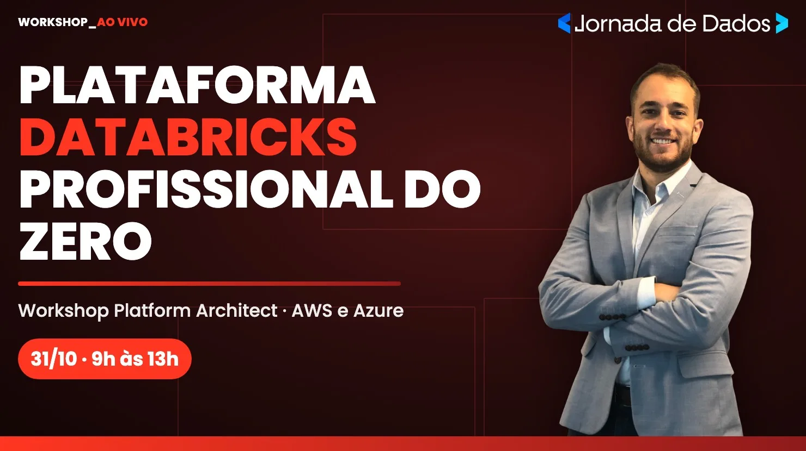
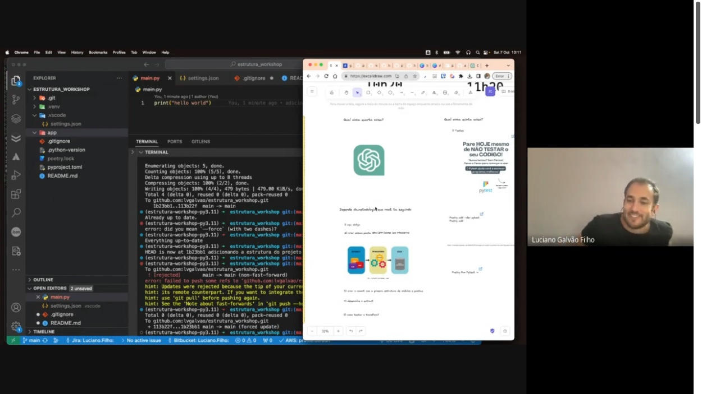

<!doctype html>
<html lang="pt-BR">
<head>
<meta charset="utf-8">
<meta name="viewport" content="width=device-width, initial-scale=1">
<title>Projeto do Zero 2026</title>
<link rel="preconnect" href="https://fonts.googleapis.com">
<link href="https://fonts.googleapis.com/css2?family=Poppins:wght@400;500;600;700;800&family=JetBrains+Mono:wght@500&display=swap" rel="stylesheet">
<style>
:root{
  --bg:#14141A; --bg2:#1E1E24; --azul:#0059DB; --azul2:#467CF6; --ciano:#22C2F4; --ciano2:#62CFFC;
  --texto:#F5F6FC; --cinza:#6E7180; --linha:#2C2C36;
}
*{box-sizing:border-box;margin:0;padding:0}
html,body{height:100%;background:#000;overflow:hidden;font-family:Poppins,sans-serif;color:var(--texto)}
#stage{position:absolute;top:50%;left:50%;width:1920px;height:1080px;transform-origin:center center}
.slide{position:absolute;inset:0;background:var(--bg);padding:96px 140px 130px;display:none;flex-direction:column}
.slide.ativo{display:flex}
.slide::before{content:"";position:absolute;inset:0;background:radial-gradient(1100px 700px at 100% 0%,rgba(0,89,219,.22),transparent 60%);pointer-events:none}
.slide.secao{justify-content:center;background:linear-gradient(135deg,#0B2E73 0%,#14141A 70%)}
.rodape{position:absolute;left:140px;right:140px;bottom:44px;display:flex;justify-content:space-between;align-items:center;color:var(--cinza);font-size:22px}
.rodape img{height:38px}
.kicker{font-size:26px;font-weight:600;color:var(--ciano);letter-spacing:.12em;text-transform:uppercase;margin-bottom:22px}
h1{font-size:100px;line-height:1.04;font-weight:800;letter-spacing:-.02em}
h2{font-size:60px;line-height:1.1;font-weight:700;letter-spacing:-.01em;margin-bottom:40px}
.dest{color:var(--ciano)}
p.lead{font-size:33px;line-height:1.45;color:#C9CBD6;max-width:1500px}
.grid{display:grid;gap:26px}
.card{background:var(--bg2);border:1px solid var(--linha);border-radius:24px;padding:30px 36px}
.card h3{font-size:30px;font-weight:700;margin-bottom:10px}
.card p{font-size:24px;line-height:1.45;color:#C9CBD6}
.card.az{border-color:rgba(70,124,246,.6)}
.num{font-size:28px;font-weight:800;color:var(--ciano)}
table{width:100%;border-collapse:collapse;font-size:25px}
th{text-align:left;color:var(--cinza);font-weight:600;padding:11px 16px;border-bottom:2px solid var(--linha)}
td{padding:12px 16px;border-bottom:1px solid var(--linha);color:#C9CBD6;vertical-align:top}
td:first-child{color:var(--texto);font-weight:600}
code,.mono{font-family:"JetBrains Mono",monospace}
code,.mono,.cmd,.tree{font-variant-ligatures:none;font-feature-settings:"liga" 0,"calt" 0}
td code{font-size:22px;color:var(--ciano2)}
.chip{display:inline-block;padding:7px 18px;border-radius:999px;background:rgba(34,194,244,.12);border:1px solid rgba(34,194,244,.4);color:var(--ciano2);font-size:22px;font-weight:600;margin:0 10px 10px 0}
ul.check{list-style:none}
ul.check li{position:relative;padding-left:42px;margin-bottom:14px;font-size:27px;line-height:1.4;color:#DADCE6}
ul.check li::before{content:"✓";position:absolute;left:0;color:var(--ciano);font-weight:800}
.cmd{background:#0B0B10;border:1px solid var(--linha);border-radius:16px;padding:22px 28px;font-family:"JetBrains Mono",monospace;font-size:23px;color:var(--ciano2);white-space:pre;line-height:1.55}
.cmd .c{color:var(--cinza)}
.grande{font-size:200px;font-weight:800;line-height:.9;color:var(--azul2)}
.decisao{display:grid;grid-template-columns:1fr 1fr;gap:56px;flex:1}
.bignum{font-size:150px;font-weight:800;line-height:.85;color:transparent;-webkit-text-stroke:3px var(--azul2);margin-bottom:10px}
.parte{font-size:22px;font-weight:700;color:var(--cinza);text-transform:uppercase;letter-spacing:.1em;margin-bottom:6px}
.rot{font-size:21px;font-weight:700;color:var(--cinza);text-transform:uppercase;letter-spacing:.1em;margin-bottom:12px}
.problema{border-left:4px solid var(--ciano);padding-left:26px;margin-top:22px}
.problema p{font-size:28px;line-height:1.45;color:#DADCE6}
.ponte{position:absolute;left:140px;right:140px;bottom:104px;display:flex;gap:18px;align-items:center;padding:16px 26px;border-radius:16px;background:rgba(0,89,219,.18);border:1px solid rgba(70,124,246,.45);font-size:23px;color:#DADCE6}
.ponte b{color:var(--ciano2);white-space:nowrap}
.ponte.lacuna{background:rgba(110,113,128,.12);border-color:var(--linha);color:var(--cinza)}
.mapa{grid-template-columns:repeat(4,1fr)}
.mapa .card{padding:22px 28px;min-height:118px}
.mapa .card h3{font-size:26px;margin:4px 0 0}
.mapa .card.f{opacity:.8}
.fluxo{display:flex;align-items:center;gap:14px}
.fluxo .card{flex:1;text-align:center;padding:24px 14px}
.fluxo .card h3{font-size:25px}
.fluxo .card p{font-size:20px}
.seta{font-size:38px;color:var(--ciano)}
.stat{font-size:96px;font-weight:800;color:var(--ciano);line-height:1}
.logos{display:flex;gap:40px;align-items:center;margin-top:40px}
.logos img{height:64px}
.tree{font-family:"JetBrains Mono",monospace;font-size:21px;line-height:1.5;color:#DADCE6;white-space:pre;background:#0B0B10;border:1px solid var(--linha);border-radius:16px;padding:22px 28px}
.tree .c{color:var(--cinza)}
.tree .d{color:var(--ciano2)}
.termos .card{padding:22px 26px}
.termos .card h3{font-size:24px;color:var(--ciano2);margin-bottom:8px}
.termos .card p{font-size:21px}
.listas .card{padding:26px 28px}
.listas .card h3{font-size:26px;color:var(--ciano2);margin-bottom:16px}
.listas ul.check li{font-size:22px;margin-bottom:11px;padding-left:34px}
.ponte .capas{margin-left:auto;display:flex;gap:14px;flex-shrink:0}
.ponte .capas img{height:84px;aspect-ratio:1480/830;object-fit:cover;border-radius:8px;border:1px solid rgba(255,255,255,.18)}
.ponte:has(.capas){padding-top:10px;padding-bottom:10px}
.cursos{display:grid;gap:30px;align-items:start}
.curso img{width:100%;aspect-ratio:1480/830;object-fit:cover;border-radius:18px;border:1px solid var(--linha);display:block}
.curso h3{font-size:26px;font-weight:700;margin:16px 0 6px}
.curso p{font-size:21px;line-height:1.4;color:#C9CBD6}
.curso .na{color:var(--ciano2);font-weight:600}
#nav{position:fixed;bottom:14px;right:18px;color:#555;font:14px Poppins;z-index:5}
</style>
</head>
<body>
<div id="stage"></div>
<div id="nav"></div>
<script>
const D = [
 {t:"Terminal, Git e IDE", parte:1, tools:["Terminal / Git Bash","git","GitHub","IDE","Claude Code"],
  prob:"O agente roda comando no terminal. Se você não sabe onde está nem o que ele vai rodar, aprova às cegas. Sem Git, não tem como desfazer.",
  live:["Criar a pasta e dar git init","Primeiro commit e subir para o GitHub","Abrir a pasta na IDE e o Claude Code no terminal"],
  conf:"pwd, git status e git diff antes de cada commit",
  ponte:"Curso Git e GitHub · Trilha Claude Code, Módulo 1 (Setup)"},
 {t:"uv e ambiente", parte:1, tools:["uv","pyproject.toml","uv.lock",".python-version"],
  prob:"“Na minha máquina funciona”, agora também com o agente instalando pacote solto.",
  live:["uv sync instala Python 3.13 e tudo","uv add para cada dependência","Outra máquina reproduz com um comando"],
  conf:"Dependência entrou com uv add; uv.lock commitado",
  ponte:"Trilha Python, do zero: lógica, estruturas de dados, funções e orientação a objetos · Python para Dados: Pandas"},
 {t:"Segredos", parte:1, tools:[".env",".env.example","GitHub Secrets","deny no settings.json"],
  prob:"Um projeto de 2026 tem chave de banco, CRM, e-mail, mídia e IA. O agente, para “funcionar logo”, cola a chave no código.",
  live:[".gitignore antes do primeiro commit",".env com valores, .env.example sem","O agente proibido de ler o .env"],
  conf:"Nenhuma chave no código nem no histórico",
  ponte:null},
 {t:"Todo script fica no repositório", parte:1, tools:["scripts/","uv run python -m"],
  prob:"O agente resolve com um script temporário, funciona, e no mês seguinte ninguém sabe como aquele número saiu.",
  live:["Pedir uma análise ao agente","Ver onde ele salvou","Mover para scripts/ e rodar de novo"],
  conf:"Dá para gerar o mesmo resultado amanhã com um comando",
  ponte:"Trilha Claude Code · Projeto 2 (Engenharia e Análise de Dados)"},
 {t:"Spec antes do código: PRD", parte:2, pilar:"alinhamento", tools:["prd.md","entrevista (grill-me)"],
  prob:"Sem especificação, o agente inventa requisito e você só descobre no fim. A maior falha não é o código, é o desalinhamento.",
  live:["A ideia em 5 linhas","O agente entrevista você até fechar cada decisão","Meia página de PRD e um plano antes do código"],
  conf:"O plano bate com o PRD; o critério de aceite é testável",
  ponte:"Trilha Claude Code · PRD e Spec-Driven · Curso Agent Harness"},
 {t:"Contexto: CLAUDE.md, memória e skills", parte:2, pilar:"memória", tools:["CLAUDE.md","HANDOFF.md","decisoes.md","skill"],
  prob:"O agente esquece tudo entre uma conversa e outra. A janela é transitória; os arquivos lembram.",
  live:["CLAUDE.md curto com “nunca quebrar”","A skill atualizar-indicadores","Conversa nova: o agente continua pelo HANDOFF.md"],
  conf:"A regra está escrita ou só “combinada”? Cabe numa tela?",
  ponte:"Curso Agent Harness · Trilha Claude Code, Módulo 3"},
 {t:"Conectar: APIs e MCP", parte:2, pilar:"ferramentas", tools:["httpx","API do Banco Central","MCP somente leitura"],
  prob:"O projeto não vive sozinho. O trabalho virou ligar o agente a banco, CRM, planilha e mídia, cada um com sua chave e seus limites.",
  live:["API do BCB por script (repetível)","Postgres pelo MCP em modo somente leitura","“Qual foi o maior dólar do mês?”"],
  conf:"Cada conexão só tem a permissão que precisa",
  ponte:"Trilha Python · APIs · Trilha Engenharia de IA, Tools e MCP"},
 {t:"Permissões", parte:2, pilar:"execução", tools:["allow","ask","deny","settings.json"],
  prob:"O agente roda o comando que você aprovar. Alguns não têm volta: apagar a pasta de dados, <code style='white-space:nowrap'>git push --force</code> que reescreve o histórico, ler a chave do .env. Pedir “por favor, não faça” não basta.",
  live:["Ler e testar: livre. Commit e push: pergunta. Destrutivo: bloqueado","Pedir “apaga a pasta data” e ver o bloqueio","Regra escrita (CLAUDE.md) x regra imposta (settings.json)"],
  conf:"Dá para desfazer? A proteção depende do agente lembrar?",
  ponte:"Curso Agent Harness · Trilha Engenharia de IA, Human in the Loop"},
  {t:"Infra como código: Databricks", parte:2, pilar:"infra", tools:["Databricks","Unity Catalog","Terraform","Asset Bundles","databricks.yml"],
  prob:"Criar schema, tabela e job clicando na tela funciona uma vez. Ninguém consegue repetir, revisar ou desfazer. E o agente não clica na sua tela: ele escreve arquivo.",
  live:["O que é o Databricks: lakehouse, Unity Catalog, Free Edition","A plataforma no Terraform, o projeto no databricks.yml","bundle validate, deploy e run"],
  conf:"Dá para recriar tudo do zero com um comando? A mudança passou por revisão no git?",
  ponte:"Trilha Databricks · Projeto Completo do zero no Databricks · Workshop Platform Architect"},
 {t:"Rodar e conferir no Databricks", parte:2, pilar:"execução", tools:["Lakeflow Jobs","MERGE INTO","qualidade","ai_query"],
  prob:"No Databricks, a pipeline precisa rodar sozinha, não duplicar, barrar dado ruim e avisar quando falha. E quem não escreve SQL também quer perguntar.",
  live:["O diario.yml vira um job agendado às 9h","O upsert vira MERGE INTO","Perguntar ao dado com o Claude dentro do Databricks"],
  conf:"Rodar duas vezes duplica? Quando falha, alguém fica sabendo?",
  ponte:"Trilha Databricks · Lakeflow Jobs · IA no Databricks"},
 {t:"Constância", parte:3, pilar:"carreira", tools:["Acelerador de Carreira","agenda fixa","desafios mensais","GitHub"],
  prob:"Uma live inspira. O que muda a carreira é voltar toda semana: o projeto de hoje some se ficar só no vídeo.",
  live:["Terça no YouTube, último sábado no Databricks","Um desafio por mês, do discovery à entrega","Acelerador de Carreira: plano, portfólio e posicionamento"],
  conf:"Qual é o seu próximo commit neste projeto? E a data dele?",
  ponte:"Acelerador de Carreira 2026 · Desafios Mensais"},
 {t:"Compartilhar o aprendizado", parte:3, pilar:"carreira", tools:["README","LinkedIn","comunidade","foto da turma"],
  prob:"Projeto que ninguém vê não abre porta. Mostrar o que você construiu, e o que aprendeu no caminho, também é parte do trabalho.",
  live:["Um README que explica o projeto em um minuto","Post: o problema, o que fiz, o que aprendi","Foto da turma, todo mundo de câmera aberta"],
  conf:"Alguém de fora entende o seu projeto só pelo README?",
  ponte:"Acelerador de Carreira 2026 · Comunidade da Jornada"},
];

const n2 = i => String(i+1).padStart(2,"0");
const rod = n => `<div class="rodape"><span>Projeto de Dados do Zero · 2026</span><span>${n}</span></div>`;
const S = [];
const secao = (k,t,p) => S.push({cls:"secao",h:`<div class="kicker">${k}</div><h1 style="font-size:96px">${t}</h1>${p?`<p class="lead" style="margin-top:36px">${p}</p>`:""}`});
const add = h => S.push({h});
const decisao = (d,i) => add(`<div class="decisao">
<div><div class="bignum">${n2(i)}</div><div class="parte">${d.parte===1?"Parte 1 · fundamento":d.parte===3?"Parte 3 · carreira":"Parte 2 · harness · "+d.pilar}</div>
<h2 style="margin-bottom:20px">${d.t}</h2>
<div>${d.tools.map(x=>`<span class="chip">${x}</span>`).join("")}</div>
<div class="problema"><div class="rot">O problema real</div><p>${d.prob}</p></div></div>
<div style="display:flex;flex-direction:column;gap:26px;padding-top:30px">
<div class="card"><div class="rot">Na live</div><ul class="check">${d.live.map(x=>`<li>${x}</li>`).join("")}</ul></div>
<div class="card az"><div class="rot">Você confere</div><p style="font-size:28px;color:#fff;font-weight:600">${d.conf}</p></div></div></div>
${d.ponte?`<div class="ponte"><b>Aprofunde na Jornada →</b><span>${d.ponte}</span></div>`:`<div class="ponte lacuna"><b style="color:var(--cinza)">Na Jornada →</b><span>aula nova, gravada a partir desta live</span></div>`}`);

/* ABERTURA */
S.push({cls:"secao", h:`<div class="kicker">Jornada de Dados</div>
<h1 style="font-size:120px">Seja bem-vindo<br>à <span class="dest">Jornada</span></h1>
<p class="lead" style="margin-top:40px">Aula bônus · Projeto de Dados do Zero 2026</p>`});

add(`<div class="kicker">Aula bônus</div><h2>Uma aula diferente das outras</h2>
<div class="grid" style="grid-template-columns:repeat(3,1fr)">
<div class="card az"><div class="rot">O objetivo</div><h3>Mostrar como eu trabalho</h3><p>Como eu monto e opero um projeto de dados hoje, com agente, do jeito que faço no dia a dia.</p></div>
<div class="card az"><div class="rot">Onde aprender</div><h3>Tudo isso está na Jornada</h3><p>Cada parte da aula aponta para a trilha que aprofunda o tema: Python, Git, Claude Code, Databricks e mais.</p></div>
<div class="card az"><div class="rot">Como funciona</div><h3>Microfone aberto desde a primeira etapa</h3><p>Pode interromper, perguntar e comentar. A gente para, conversa sobre o tema e segue.</p></div></div>
<p class="lead" style="margin-top:46px">O roteiro existe, mas <b style="color:#fff">quem decide o ritmo são as perguntas</b>. Se um tema render, a gente fica nele.</p>`);
/* AGENDA FIXA: aparece no começo e no fim */
const agenda = () => add(`<div class="kicker">Agenda fixa · tenha sempre em mente</div><h2>Toda semana tem aula ao vivo</h2>
<div class="grid" style="grid-template-columns:1fr 1fr;gap:34px">
<div class="card az" style="padding:34px 40px"><div class="rot">Toda terça · no YouTube</div><h3 style="font-size:40px">Quem Sabe Faz ao Vivo</h3>
<p style="margin-top:6px">Live aberta, toda semana, com gente que faz dados no dia a dia.</p>
<div style="margin-top:26px;padding-top:22px;border-top:1px solid var(--linha);display:flex;gap:24px;align-items:center">
<div><div class="num" style="font-size:24px">PRÓXIMA · TERÇA, 27/10, 19H30</div><p style="font-size:24px;color:#fff;font-weight:600;margin-top:8px">Do Excel para o Databricks</p><p>com Jennifer Maia, Analytics Engineer</p></div></div></div>
<div class="card az" style="padding:34px 40px"><div class="rot">Último sábado do mês</div><h3 style="font-size:40px">Aula ao vivo de Databricks</h3>
<p style="margin-top:6px">Uma manhã inteira, mão na massa, e a gravação fica na área do aluno.</p>
<div style="margin-top:26px;padding-top:22px;border-top:1px solid var(--linha);display:flex;gap:24px;align-items:center">
<div><div class="num" style="font-size:24px">PRÓXIMA · SÁBADO, 31/10, 9H ÀS 13H</div><p style="font-size:24px;color:#fff;font-weight:600;margin-top:8px">Workshop Platform Architect</p><p>plataforma Databricks do zero, em AWS e Azure</p></div></div></div></div>
<p class="lead" style="margin-top:40px">Coloque na agenda: <b style="color:#fff">terça à noite no YouTube</b> e <b style="color:#fff">o último sábado de cada mês</b>.</p>`);
agenda();

add(`<div class="kicker">Live remasterizada · 2023 → 2026</div>
<h1>Como estruturar o seu<br>projeto de dados <span class="dest">do zero</span></h1>
<p class="lead" style="margin-top:44px">A IA escreve o código. As 12 decisões que fazem o projeto funcionar continuam sendo suas.</p>
<div class="logos"></div>`);

add(`<div class="kicker">O que vamos ver</div><h2 style="margin-bottom:30px">O checklist de um projeto com agente</h2>
<div class="grid listas" style="grid-template-columns:repeat(4,1fr);gap:22px">
<div class="card"><div class="rot">1 · Antes do código</div><h3>A base</h3><ul class="check"><li>Sei em que pasta estou e o que o agente vai rodar</li><li>Git desde o primeiro minuto</li><li>Ambiente com uv: outra máquina roda igual</li><li>Chave só no .env, nunca no código</li><li>PRD antes de pedir código</li></ul></div>
<div class="card"><div class="rot">2 · Com o agente</div><h3>O harness</h3><ul class="check"><li>Regras escritas no CLAUDE.md</li><li>Tarefa repetida virou skill ou script</li><li>Toda conexão com a permissão mínima</li><li>O que não tem volta é bloqueado</li><li>HANDOFF: a próxima sessão continua</li></ul></div>
<div class="card"><div class="rot">3 · Confiar</div><h3>A validação</h3><ul class="check"><li>Todo número tem fonte</li><li>O banco bate com a API</li><li>Rodar duas vezes não duplica</li><li>Testes e revisor antes do commit</li><li>Todo erro vira regra ou teste</li></ul></div>
<div class="card"><div class="rot">4 · No ar</div><h3>A operação</h3><ul class="check"><li>Começa local, sobe para a nuvem</li><li>Roda sozinho todo dia às 9h</li><li>Quando falha, alguém fica sabendo</li><li>Custo de token sob controle</li><li>Sei quando não usar IA</li></ul></div></div>
<div class="ponte"><b>Ao longo da aula →</b><span>cada item vira uma das 12 decisões, com exemplo no projeto do painel e espaço para perguntas</span></div>`);

/* ONDE APROFUNDAR: capas da tela Conteúdos da área do aluno (24/10/2026) */
const fileira = (titulo, cursos, nomeFileira = titulo) => add(`<div class="kicker">Na área do aluno · Conteúdos</div><h2 style="margin-bottom:34px">${titulo}</h2>
<div class="cursos" style="grid-template-columns:repeat(${cursos.length},1fr);flex:1;align-content:center;padding-bottom:110px">${cursos.map(c=>`<div class="curso"><h3>${c[1]}</h3><p><span class="na">Na live:</span> ${c[2]}</p></div>`).join("")}</div>
<div class="ponte"><b>Onde fica →</b><span>suajornadadedados.curseduca.pro · menu Conteúdos · fileira “${nomeFileira}”</span></div>`);
secao("Onde aprofundar","Cada decisão tem uma trilha","As trilhas que aprofundam cada parte desta live, como aparecem na tela Conteúdos da área do aluno.");
fileira("Fundamentos e Base", [
  ["git-github","Git e GitHub","decisão 1, terminal e Git"],
  ["python","Trilha Python","os scripts e a chamada da API"],
  ["pandas","Python para Dados: Pandas","explorar o dado antes de validar"],
  ["sql","Trilha SQL","consultar o banco do painel"],
  ["dbt","Workshop DBT","transformar dado em camadas"]]);
fileira("Inteligência Artificial, Engenharia de IA e Agentes", [
  ["claude-code","Trilha Claude Code","o agente da live inteira"],
  ["engenharia-ia","Trilha Engenharia de IA","decisões 7 e 8, MCP e permissões"],
  ["agent-harness","Agent Harness","a Parte 2: memória, ferramentas, execução e validação"],
  ["custos-ia","Reduza custos com IA","decisão 12, custo e limite"]]);
fileira("Especialização no Databricks", [
  ["databricks","Trilha Databricks","decisão 10, quando o projeto cresce"],
  ["databricks-projeto","Projeto Completo do zero no Databricks","este painel em escala, com medalhão"],
  ["databricks-platform","Workshop Platform Architect","plataforma profissional em AWS e Azure"]],
  "Especialização em Engenharia de Dados no Databricks");
fileira("Especialização em Engenharia de Dados", [
  ["engenharia-dados","Engenharia de Dados","decisão 11, pipelines que rodam sozinhas"],
  ["aws","Trilha AWS","a opção de nuvem além do Supabase"],
  ["fabric","Workshop Fabric","projeto completo até o agente de dados"]]);
fileira("Outras especializações", [
  ["n8n","Trilha Automação com n8n","integrar ferramentas sem código"],
  ["web-scraping","Trilha Web Scraping","extrair quando não existe API"],
  ["power-bi","Trilha Power BI","o painel na frente do usuário"]]);

add(`<div class="kicker">Out/2023</div><h2>O mesmo projeto, há 3 anos</h2>
<div class="grid" style="grid-template-columns:1.45fr 1fr;gap:44px;align-items:start">
<div>
<p style="font-size:20px;color:var(--cinza);margin-top:12px">08/10/2023, 1h13 de live: push rejeitado no terminal, Poetry, e a IA numa janela ao lado</p></div>
<div><div class="card"><h3>O que quebrou ao vivo</h3><ul class="check" style="margin-top:18px">
<li>Versão do Python no VS Code</li><li>Caminho relativo na pasta app/</li><li>Black brigando com Flake8</li><li>Pre-commit removido do projeto</li><li>CI só funcionou num repo antigo</li><li>Deploy: “fica para o próximo”</li></ul></div>
<div style="display:flex;align-items:center;gap:24px;margin-top:26px"><div class="grande" style="font-size:96px">4h25</div><p style="font-size:23px;line-height:1.4;color:#C9CBD6">ao vivo, tudo na mão. O desafio era <b style="color:#fff">escrever</b> o projeto.</p></div></div></div>`);

add(`<div class="kicker">2026</div><h2>Agora o agente escreve. O problema mudou.</h2>
<div class="grid" style="grid-template-columns:repeat(3,1fr)">
<div class="card"><h3>Ele esquece</h3><p>Cada conversa começa do zero se as regras não estiverem escritas.</p></div>
<div class="card"><h3>Ele tem a chave do carro</h3><p>Mexe em banco, CRM e planilha. Algumas ações não têm volta.</p></div>
<div class="card"><h3>Ele inventa número</h3><p>Com confiança. E as fontes não batem entre si.</p></div>
<div class="card"><h3>Tudo é conexão</h3><p>O trabalho virou ligar sistemas, mais do que escrever código.</p></div>
<div class="card"><h3>Precisa rodar sem você</h3><p>Se depende de você abrir o notebook, não é projeto.</p></div>
<div class="card"><h3>Tudo tem custo</h3><p>Tokens, créditos e o seu tempo de revisão.</p></div></div>`);

add(`<div class="kicker">Como eu trabalho hoje</div><h2>Um repositório opera os lançamentos da Jornada</h2>
<div class="grid" style="grid-template-columns:repeat(3,1fr)">
<div class="card"><div class="stat">200+</div><p style="margin-top:12px">scripts salvos no repositório</p></div>
<div class="card"><div class="stat">~30</div><p style="margin-top:12px">skills, uma para cada tarefa que se repete</p></div>
<div class="card"><div class="stat">0</div><p style="margin-top:12px">pessoas no time de desenvolvimento</p></div></div>
<p class="lead" style="margin-top:48px">Conectado a banco, CRM, mídia paga e área do aluno. Rotinas rodam sozinhas de manhã e à noite.<br>Não tem pre-commit nem MkDocs. Tem <b style="color:#fff">regras escritas, permissões e conferência de número</b>.</p>`);

add(`<div class="kicker">O que vamos construir</div><h2>Um painel de indicadores operado por agente</h2>
<div class="fluxo">
<div class="card"><h3>API Banco Central</h3><p>dólar · Selic · IPCA</p></div><span class="seta">→</span>
<div class="card"><h3>Bruto</h3><p>data/raw + Storage</p></div><span class="seta">→</span>
<div class="card"><h3>Valida</h3><p>transformar.py</p></div><span class="seta">→</span>
<div class="card"><h3>Banco</h3><p>DuckDB ou Postgres</p></div><span class="seta">→</span>
<div class="card"><h3>Confere</h3><p>bate com a API?</p></div><span class="seta">→</span>
<div class="card"><h3>Relatório</h3><p>o que mudou hoje</p></div></div>
<table style="margin-top:44px"><tr><th>Indicador</th><th>Último</th><th>Data</th><th>Anterior</th><th>Variação</th></tr>
<tr><td>Dólar comercial (venda)</td><td>R$ 5,0377</td><td>23/10/2026</td><td>5,0383 (22/10)</td><td>-0,01%</td></tr>
<tr><td>Selic meta</td><td>13,75% a.a.</td><td>24/10/2026</td><td>13,75 (23/10)</td><td>0,00 p.p.</td></tr>
<tr><td>IPCA mensal</td><td>0,82%</td><td>01/09/2026</td><td>-0,32 (01/08)</td><td>1,14 p.p.</td></tr></table>
<p style="font-size:21px;color:var(--cinza);margin-top:14px">Relatório gerado pelo projeto em 24/10/2026 · fonte: API SGS do Banco Central (séries 1, 432, 433)</p>`);

add(`<div class="kicker">As 12 decisões</div><h2>Parte 1: fundamentos · Parte 2: o harness · Parte 3: carreira</h2>
<div class="grid mapa">${D.map((d,i)=>`<div class="card ${d.parte===1?"f":"az"}"><div class="num">${n2(i)}</div><h3>${d.t}</h3></div>`).join("")}</div>`);

/* PARTE 1 */
secao("Parte 1","Fundamentos que não mudaram","Terminal, Git e IDE, uv, segredos e script no repositório. Rápidos, mas obrigatórios.");
decisao(D[0],0);

/* AQUECIMENTO: roteiro completo em material/aquecimento.md */
const aquec = (n, titulo, cmd, acontece, importa) => add(`<div class="kicker">Aquecimento · ${n} de 3</div><h2 style="margin-bottom:28px">${titulo}</h2>
<div class="grid" style="grid-template-columns:1.25fr 1fr;gap:34px;align-items:start">
<div class="cmd" style="font-size:24px">${cmd}</div>
<div style="display:flex;flex-direction:column;gap:22px">
<div class="card"><div class="rot">O que acontece</div><p>${acontece}</p></div>
<div class="card az"><div class="rot">Por que importa com agente</div><p style="color:#fff">${importa}</p></div></div></div>
<div class="ponte"><b>Para digitar junto →</b><span>material/aquecimento.md no repositório, com cada comando e o que ele responde</span></div>`);
secao("Aquecimento","Quebrar, perceber e desfazer","Três exercícios curtos, numa pasta nova: Git agora, pytest e CI/CD logo depois do uv. É o que o agente vai fazer no projeto, só que na mão.");
aquec(1, "Git: o botão de desfazer",
`mkdir projeto01 && cd projeto01
<span class="c"># main.py: print("meu primeiro código python")</span>
python main.py
git init
git add main.py
git commit -m "meu primeiro commit"
<span class="c"># apague o ")" e salve</span>
python main.py      <span class="c"># SyntaxError</span>
git status          <span class="c"># modified: main.py</span>
git diff            <span class="c"># o que mudou</span>
git restore main.py
python main.py      <span class="c"># funciona de novo</span>`,
"O commit é uma foto do código. Quebrou? <b style=\"color:#fff\">git diff</b> mostra o estrago e <b style=\"color:#fff\">git restore</b> volta para a foto.",
"O agente mexe em vários arquivos de uma vez. Commit pequeno e frequente transforma qualquer erro em um comando para desfazer.");

/* PONTO EXTRA: IDE e agentes, depois do aquecimento */
add(`<div class="kicker">Ponto extra · IDEs e agentes</div><h2>A IDE é gosto. O que mudou foi o agente.</h2>
<div class="grid" style="grid-template-columns:repeat(3,1fr)">
<div class="card"><h3>VS Code</h3><p>Gratuito, padrão do mercado. Claude Code no terminal ou na extensão.</p></div>
<div class="card"><h3>Cursor</h3><p>Fork do VS Code com IA embutida no editor.</p></div>
<div class="card"><h3>Antigravity</h3><p>IDE do Google com agentes. Usada nas Trilhas Python e Claude Code.</p></div>
<div class="card"><h3>PyCharm / JetBrains</h3><p>IDE completa para projetos grandes em Python.</p></div>
<div class="card"><h3>Notebook</h3><p>Jupyter e Databricks para explorar. Produção vai para scripts/.</p></div>
<div class="card az"><h3>Claude Code</h3><p>Agente no terminal, na IDE, no desktop e na web. Lê, edita, roda e testa.</p></div></div>
<p class="lead" style="margin-top:34px">Outros agentes (Codex, Gemini CLI) seguem a mesma lógica: arquivo de regras, permissões, testes e conferência.</p>`);

add(`<div class="kicker">Ponto extra · agentes de código</div><h2 style="margin-bottom:28px">Claude Code não é a única opção</h2>
<table style="font-size:24px"><tr><th style="width:20%">Agente</th><th style="width:18%">De quem</th><th>Qual modelo</th><th style="width:26%">Roda 100% local?</th></tr>
<tr><td>Claude Code</td><td>Anthropic</td><td>Claude</td><td>Não, modelo na nuvem</td></tr>
<tr style="background:rgba(34,194,244,.08)"><td style="color:var(--ciano2)">OpenCode</td><td>código aberto</td><td>você escolhe: Claude, GPT, Gemini ou aberto</td><td><b style="color:var(--ciano2)">Sim</b>, com Ollama ou LM Studio</td></tr>
<tr><td>Codex CLI</td><td>OpenAI</td><td>GPT</td><td>Não, modelo na nuvem</td></tr>
<tr><td>Gemini CLI</td><td>Google</td><td>Gemini</td><td>Não, modelo na nuvem</td></tr>
<tr><td>Aider · Cline</td><td>código aberto</td><td>você escolhe, inclusive aberto</td><td>Sim, com modelo aberto</td></tr></table>
<div class="grid" style="grid-template-columns:repeat(3,1fr);gap:22px;margin-top:26px">
<div class="card az" style="padding:22px 28px"><h3 style="font-size:26px">Por que o OpenCode importa</h3><p style="font-size:21px">O mesmo jeito do Claude Code, no terminal, mas o modelo é escolha sua. Com modelo aberto, nada sai da máquina.</p></div>
<div class="card" style="padding:22px 28px"><h3 style="font-size:26px">O preço do local</h3><p style="font-size:21px">Pede máquina boa (memória e GPU) e o modelo aberto erra mais. Vale quando o dado não pode sair.</p></div>
<div class="card" style="padding:22px 28px"><h3 style="font-size:26px">O harness é o mesmo</h3><p style="font-size:21px">Regras (CLAUDE.md ou AGENTS.md), permissões, testes e conferência. Troca o agente, o método fica.</p></div></div>`);

decisao(D[1],1);
add(`<div class="kicker">02 · por que isso importa</div><h2 style="margin-bottom:28px">Bibliotecas e versão do Python</h2>
<div class="grid" style="grid-template-columns:1fr 1.15fr;gap:34px;align-items:start">
<div><div class="rot">As bibliotecas deste projeto</div>
<table style="font-size:23px"><tr><th>Biblioteca</th><th>Para quê</th></tr>
<tr><td><code>httpx</code></td><td>chamar a API do Banco Central</td></tr>
<tr><td><code>duckdb</code></td><td>banco local, sem servidor</td></tr>
<tr><td><code>psycopg</code></td><td>falar com o Postgres do Supabase</td></tr>
<tr><td><code>python-dotenv</code></td><td>ler as chaves do .env</td></tr>
<tr><td><code>pytest</code> <span style="color:var(--cinza);font-weight:400">dev</span></td><td>testes</td></tr>
<tr><td><code>ruff</code> <span style="color:var(--cinza);font-weight:400">dev</span></td><td>padrão de código</td></tr></table>
<p style="font-size:21px;color:var(--cinza);margin-top:14px">6 diretas viram 19 pacotes no uv.lock: cada biblioteca traz as suas.</p></div>
<div class="grid" style="grid-template-columns:1fr 1fr;gap:20px">
<div class="card" style="padding:22px 26px"><h3 style="font-size:25px">Código que você não escreve</h3><p style="font-size:21px">Biblioteca é código pronto e testado por outros. Você só precisa saber qual usar e em que versão.</p></div>
<div class="card" style="padding:22px 26px"><h3 style="font-size:25px">Versão muda o código</h3><p style="font-size:21px"><code>df.append</code> sumiu no pandas 2.0. O agente às vezes sugere a sintaxe antiga: o uv.lock fixa a versão que o teste aprovou.</p></div>
<div class="card" style="padding:22px 26px"><h3 style="font-size:25px">E a versão do Python?</h3><p style="font-size:21px">Cada biblioteca roda numa faixa de versões. A regra de 2023 continua: a mais nova que as suas bibliotecas suportam. Aqui: 3.13.</p></div>
<div class="card" style="padding:22px 26px"><h3 style="font-size:25px">Produção x desenvolvimento</h3><p style="font-size:21px"><code>uv add httpx</code> vai para onde o código roda. <code>uv add --dev pytest</code> fica só com quem desenvolve.</p></div></div></div>`);
add(`<div class="kicker">02 na prática</div><h2 style="margin-bottom:28px">Python 3.13 e pytest, do jeito certo</h2>
<div class="grid" style="grid-template-columns:1.1fr 1fr;gap:34px;align-items:start">
<div><div class="rot">Na sua máquina</div><div class="cmd" style="font-size:24px">uv init projeto01 --python 3.13
cd projeto01
uv add --dev pytest     <span class="c"># + pytest==9.1.1</span>
uv run python --version <span class="c"># Python 3.13.2</span>
uv run pytest -q
git add . && git commit -m "ambiente"</div>
<div class="rot" style="margin-top:24px">Em outra máquina (ou no CI)</div><div class="cmd" style="font-size:24px">git clone ... && cd projeto01
uv sync                 <span class="c"># mesmo Python, mesmas versões</span></div></div>
<div><div class="rot">O que o uv escreveu</div><div class="tree" style="font-size:22px"><span class="d">.python-version</span>
3.13

<span class="d">pyproject.toml</span>
requires-python = ">=3.13"
[dependency-groups]
dev = ["pytest>=9.1.1"]

<span class="d">uv.lock</span>  <span class="c"># versão exata de tudo</span></div>
<div class="card az" style="margin-top:22px;padding:22px 28px"><p style="color:#fff"><b>Nunca</b> pip install solto: o pacote some do pyproject e a outra máquina quebra. No CLAUDE.md: “dependência só com uv add”.</p></div></div></div>`);
/* aquecimento 2 e 3 depois do uv: o pytest entra com uv add */
aquec(2, "pytest: o teste que avisa",
`uv init
echo "__pycache__/" > .gitignore
uv add --dev pytest
<span class="c"># calculos.py:      return a + b</span>
<span class="c"># test_calculos.py: assert somar(2, 3) == 5</span>
uv run pytest -q    <span class="c"># 1 passed</span>
git add . && git commit -m "soma com teste"
<span class="c"># troque a + b por a - b</span>
uv run pytest -q    <span class="c"># FAILED: assert -1 == 5</span>
git restore calculos.py
uv run pytest -q    <span class="c"># 1 passed</span>`,
"O teste guarda uma regra que ninguém precisa lembrar. Mudou o código e a regra quebrou, ele fica vermelho na hora.",
"Neste projeto, um hook roda o pytest no fim de cada resposta do agente. Com vermelho, ele não pode dizer “pronto”.");
add(`<div class="kicker">Aquecimento · 3 de 3</div><h2 style="margin-bottom:28px">CI/CD: testar e entregar sozinho</h2>
<div class="fluxo" style="margin-bottom:30px">
<div class="card"><h3>git push</h3><p>você ou o agente</p></div><span class="seta">→</span>
<div class="card az"><h3>CI · testes</h3><p>máquina limpa, pip install, pytest</p></div><span class="seta">→</span>
<div class="card"><h3>verde?</h3><p>vermelho para aqui e avisa</p></div><span class="seta">→</span>
<div class="card az"><h3>CD · entrega</h3><p>roda, publica ou faz deploy</p></div></div>
<div class="grid" style="grid-template-columns:1.2fr 1fr;gap:34px;align-items:start">
<div class="cmd" style="font-size:24px">echo "pytest" > requirements.txt   <span class="c"># o CI instala com pip</span>
gh repo create projeto01 --private --source=. --push
<span class="c"># troque a + b por a - b</span>
git commit -am "quebrei a soma" && git push   <span class="c"># vermelho</span>
git revert HEAD --no-edit && git push          <span class="c"># verde</span></div>
<div class="card az"><div class="rot">Por que importa com agente</div><p style="color:#fff">É a última barreira: mesmo que você ou o agente esqueça de testar, o GitHub testa. E só entrega o que passou.</p></div></div>
<div class="ponte"><b>Neste projeto →</b><span>ci.yml testa cada push · diario.yml roda a pipeline todo dia às 9h · material/aquecimento.md tem o passo a passo</span></div>`);
add(`<div class="kicker">Aquecimento · 3 de 3 · o arquivo completo</div><h2 style="margin-bottom:14px">.github/workflows/ci.yml</h2>
<div class="grid" style="grid-template-columns:1fr 1fr;gap:26px;align-items:start">
<div class="cmd" style="font-size:17px;line-height:1.3;padding:16px 22px">name: CI/CD

<span class="c"># Quando o pipeline roda</span>
on:
  push:
    branches: [main]
  pull_request:
    branches: [main]

jobs:
  <span class="c"># ---------- CI: integração contínua ----------</span>
  test:
    name: CI - Testes
    runs-on: ubuntu-latest
    steps:
      - name: Baixar o código
        uses: actions/checkout@v4

      - name: Instalar Python
        uses: actions/setup-python@v5
        with:
          python-version: "3.12"

      - name: Instalar dependências
        run: pip install -r requirements.txt

      - name: Rodar testes
        run: pytest -v</div>
<div><div class="cmd" style="font-size:17px;line-height:1.3;padding:16px 22px">  <span class="c"># ---------- CD: entrega contínua ----------</span>
  deploy:
    name: CD - Deploy
    needs: test                     <span class="c"># só se os testes passarem</span>
    if: github.event_name == 'push' <span class="c"># só no push (não em PR)</span>
    runs-on: ubuntu-latest
    steps:
      - name: Baixar o código
        uses: actions/checkout@v4

      - name: Empacotar a aplicação
        run: |
          mkdir -p dist
          cp main.py dist/
          echo "Build gerado em $(date)" > dist/build-info.txt

      - name: Publicar artefato
        uses: actions/upload-artifact@v4
        with:
          name: app
          path: dist/

      - name: Deploy (simulado)
        run: echo "🚀 Deploy da versão \${{ github.sha }} realizado com sucesso!"</div>
<div class="card az" style="padding:18px 24px;margin-top:20px"><p style="color:#fff"><b>CI</b> testa em todo push e PR. <b>CD</b> só roda no push e só com o verde (<code>needs: test</code>): empacota, publica o artefato e simula o deploy.</p></div></div></div>
`);
D.slice(2,4).forEach((d,i)=>decisao(d,i+2));

/* PARTE 2 */
secao("Parte 2","O harness","Tudo o que fica em volta do modelo e faz ele virar um agente que entrega.");
add(`<div class="kicker">Agent harness</div><h2>Quatro pilares em volta do modelo</h2>
<div class="grid" style="grid-template-columns:repeat(4,1fr)">
<div class="card az"><div class="rot">Memória</div><h3>CLAUDE.md · HANDOFF.md · decisoes.md · skill</h3><p>A janela é transitória. Os arquivos lembram.</p></div>
<div class="card az"><div class="rot">Ferramentas</div><h3>scripts · MCP somente leitura</h3><p>O agente só alcança o que você ligou, com a permissão que você deu.</p></div>
<div class="card az"><div class="rot">Execução</div><h3>allow · ask · deny · GitHub Actions</h3><p>O que não tem volta é bloqueado, não pedido.</p></div>
<div class="card az"><div class="rot">Validação</div><h3>testes · conferir.py · hook · revisor</h3><p>Não dá para dizer “pronto” com vermelho.</p></div></div>
<div class="grid" style="grid-template-columns:1fr 1fr;margin-top:30px">
<div class="card"><h3>Todo erro vira um sinal permanente</h3><p>Uma regra, uma permissão negada, um hook ou um teste. Em 2023 era “todo bug vira teste”.</p></div>
<div class="card"><h3>Comece mínimo</h3><p>O harness cresce quando aparece um risco novo, não por reflexo.</p></div></div>
<div class="ponte"><b>Aprofunde na Jornada →</b><span>Curso Agent Harness (3h48) · Desafio de Agosto, aula 3</span></div>`);
add(`<div class="kicker">Curso Agent Harness · Caio Oliveira · 28/06/2026</div><h2>O que levar da aula de 3h47 (com o minuto)</h2>
<div class="grid" style="grid-template-columns:repeat(3,1fr)">
<div class="card az"><div class="num">0:50</div><h3>Modelo razoável + bom harness</h3><p>ganha de modelo top com harness ruim.</p></div>
<div class="card"><div class="num">0:25</div><h3>Tudo que não é o modelo é harness</h3><p>O harness é a rédea do cavalo.</p></div>
<div class="card"><div class="num">1:46</div><h3>CLAUDE.md é mapa, não manual</h3><p>Até ~200 linhas. Sem ele, o agente faz grep e lê tudo.</p></div>
<div class="card"><div class="num">2:06</div><h3>Plano fechado</h3><p>Com PRD e issues, o agente muda o código, e não o plano.</p></div>
<div class="card"><div class="num">2:16</div><h3>O erro virou regra ao vivo</h3><p>Uma correção foi gravada na memória e não voltou.</p></div>
<div class="card"><div class="num">3:01</div><h3>A janela acaba, o repositório lembra</h3><p>Handoff é passagem de turno: só o crítico.</p></div></div>
<div class="ponte"><b>Aprofunde na Jornada →</b><span>Curso Agent Harness · resumo com minutos em referencias/agent-harness/</span></div>`);
decisao(D[4],4);
add(`<div class="kicker">05 na prática · o que colar</div><h2 style="margin-bottom:24px">O prompt do PRD: entrevista antes do código</h2>
<div class="grid" style="grid-template-columns:1.35fr 1fr;gap:30px;align-items:start">
<div class="cmd" style="font-size:19px;line-height:1.42;white-space:pre-wrap">Quero construir um painel de indicadores econômicos do zero.
<b style="color:#fff">Antes de qualquer código, me entreviste, uma pergunta por vez,</b>
<b style="color:#fff">até fechar cada decisão.</b> Só depois escreva o prd.md.

1. Dólar (SGS 1), Selic meta (SGS 432) e IPCA (SGS 433) na API do BC.
2. Guardar o JSON bruto e salvar a versão validada num banco.
3. Começar com DuckDB local; depois Supabase mudando só o .env.
4. Rodar sozinho às 9h e gerar o relatório do que mudou.
5. Depois, levar a mesma tabela para o Databricks.

Regras: upsert por série e data · nenhum número inventado ·
chave só no .env · <b style="color:#fff">nada de DELETE, DROP ou TRUNCATE</b> ·
dependência só com uv add · script em scripts/

O PRD tem: objetivo, fontes, tabela de saída, regras do dado,
o que fica fora e critério de aceite testável. <b style="color:#fff">Não escreva código.</b></div>
<div style="display:flex;flex-direction:column;gap:20px">
<div class="card az" style="padding:22px 28px"><div class="rot">O que sai</div><p style="font-size:22px">Meia página de <code>prd.md</code>. Depois: “me mostre o plano em passos, sem código”.</p></div>
<div class="card" style="padding:22px 28px"><div class="rot">Perguntas que valem a entrevista</div><ul class="check"><li style="font-size:21px">O valor vem com ponto ou vírgula?</li><li style="font-size:21px">E se vier data no futuro?</li><li style="font-size:21px">IPCA negativo é erro ou dado?</li><li style="font-size:21px">Se a API cair, tenta de novo?</li></ul></div></div></div>
<div class="ponte"><b>Para copiar →</b><span>material/prompt-prd.md: o prompt completo e os prompts de cada passo</span></div>`);
add(`<div class="kicker">05 na prática · a skill grill-me</div><h2 style="margin-bottom:24px">Deixar o agente te entrevistar</h2>
<div class="grid" style="grid-template-columns:1.2fr 1fr;gap:30px;align-items:start">
<div><div class="rot">1 · Instalar no Claude Code (uma vez)</div><div class="cmd" style="font-size:22px">claude plugin install mattpocock-skills@claude-plugins-official</div>
<div class="rot" style="margin-top:20px">2 · Preparar o repositório (uma vez por projeto)</div><div class="cmd" style="font-size:22px">/setup-matt-pocock-skills</div>
<div class="rot" style="margin-top:20px">3 · Usar</div><div class="cmd" style="font-size:22px">/grill-me   <span class="c"># e cole a ideia em 5 linhas</span></div>
<div class="rot" style="margin-top:20px">OpenCode, Cursor e outros agentes</div><div class="cmd" style="font-size:20px">npx skills@latest add mattpocock/skills -a opencode</div></div>
<div style="display:flex;flex-direction:column;gap:20px">
<div class="card az" style="padding:22px 28px"><h3 style="font-size:26px">O que ela faz</h3><p style="font-size:21px">Uma entrevista sem dó: o agente pergunta até cada decisão ficar fechada. Só depois vem o PRD.</p></div>
<div class="card" style="padding:22px 28px"><h3 style="font-size:26px">Só você chama</h3><p style="font-size:21px">O agente não ativa sozinho: você digita <code>/grill-me</code> quando quer alinhar.</p></div>
<div class="card" style="padding:22px 28px"><h3 style="font-size:26px">Leia antes de instalar</h3><p style="font-size:21px">Skill de terceiro é instrução para o seu agente. Abra o SKILL.md antes, como faria com qualquer código.</p></div></div></div>
<div class="ponte"><b>Repositório →</b><span>github.com/mattpocock/skills · /grill-me para ideias, /grill-with-docs para mudanças no código</span></div>`);
decisao(D[5],5);
add(`<div class="kicker">06 na prática · o que colar</div><h2 style="margin-bottom:24px">As regras do PRD viram o CLAUDE.md</h2>
<div class="grid" style="grid-template-columns:1fr 1.15fr;gap:30px;align-items:start">
<div><div class="rot">O prompt</div><div class="cmd" style="font-size:21px;white-space:pre-wrap">Leia o prd.md e escreva um CLAUDE.md curto:
comandos, a seção "Nunca quebrar" com as
regras que não podem ser violadas e onde
fica cada coisa. No máximo uma tela.</div>
<div class="card az" style="margin-top:22px;padding:22px 28px"><p style="font-size:22px;color:#fff">Toda conversa nova começa lendo esse arquivo. É o que impede o agente de esquecer as regras.</p></div></div>
<div><div class="rot">O que sai (o CLAUDE.md deste projeto)</div><div class="tree" style="font-size:19px;white-space:pre-wrap"><span class="d">## Nunca quebrar</span>
- Segredos: chave só no .env. Nunca ler,
  imprimir ou commitar o .env.
- Carga é upsert por (serie, data). Rodar
  duas vezes não pode duplicar.
- Data no futuro não entra; negativo só no
  IPCA; valor vem como texto.
- Nunca inventar número. Todo número cita
  a série do SGS.
- Todo script fica em scripts/.
- Teste não chama a API real nem o banco
  de produção.
- Dependência só com uv add.</div></div></div>`);
decisao(D[6],6);
add(`<div class="kicker">07 na prática · construindo</div><h2 style="margin-bottom:24px">Da API ao Supabase em quatro passos</h2>
<div class="grid" style="grid-template-columns:repeat(4,1fr);gap:20px">
<div class="card" style="padding:22px 22px"><div class="num">①</div><h3 style="font-size:24px">Extrair</h3><p style="font-size:19px;margin-bottom:12px">“Crie scripts/extrair_bcb.py: busca as séries 1, 432 e 433 e salva o JSON bruto. httpx, timeout, 3 tentativas.”</p><div class="mono" style="font-size:16px;color:var(--ciano2)">data/raw/2026-10-24/</div></div>
<div class="card" style="padding:22px 22px"><div class="num">②</div><h3 style="font-size:24px">Banco local</h3><p style="font-size:19px;margin-bottom:12px">“Crie scripts/carregar.py: valida e faz upsert por (serie, data) num DuckDB. Teste: rodar duas vezes não duplica.”</p><div class="mono" style="font-size:16px;color:var(--ciano2)">data/painel.duckdb</div></div>
<div class="card az" style="padding:22px 22px"><div class="num">③</div><h3 style="font-size:24px">Refatorar: Supabase</h3><p style="font-size:19px;margin-bottom:12px">“Com DATABASE_URL no .env, grava no Postgres; sem ela, continua no DuckDB. Mesmo código, mesmos testes.”</p><div class="mono" style="font-size:16px;color:var(--ciano2)">modo nuvem (postgres)</div></div>
<div class="card" style="padding:22px 22px"><div class="num">④</div><h3 style="font-size:24px">Conferir pelo MCP</h3><p style="font-size:19px;margin-bottom:12px">“Qual foi o maior dólar do mês? Mostre a consulta que você usou.”</p><div class="mono" style="font-size:16px;color:var(--ciano2)">MCP só com SELECT</div></div></div>
<div class="grid" style="grid-template-columns:1.2fr 1fr;gap:26px;margin-top:26px;align-items:start">
<div><div class="rot">No Supabase</div><div class="cmd" style="font-size:20px"><span class="c"># 1. supabase.com: novo projeto gratuito</span>
<span class="c"># 2. Project Settings › Database › Session pooler</span>
cp .env.example .env     <span class="c"># DATABASE_URL=postgresql://...</span>
uv run python -m scripts.rodar_tudo
<span class="c"># 3. a tabela aparece no Table Editor</span></div></div>
<div class="card az" style="padding:22px 28px"><p style="font-size:22px;color:#fff">A refatoração do passo ③ é o ponto da aula: o agente muda o código, os testes continuam verdes e só uma linha do .env decide onde o dado vai.</p></div></div>`);

/* 07 na prática: API x MCP, com o Supabase de exemplo */
add(`<div class="kicker">07 na prática · exemplo com o Supabase</div><h2 style="margin-bottom:26px">API ou MCP: quem fala com o banco?</h2>
<div class="grid" style="grid-template-columns:1fr 1fr;gap:34px">
<div class="card" style="padding:28px 32px"><div class="rot">Via código · API</div>
<div class="fluxo" style="gap:10px;margin:8px 0 18px"><div class="card" style="padding:14px 8px"><h3 style="font-size:20px">Claude Code</h3><p style="font-size:17px">escreve uma vez</p></div><span class="seta" style="font-size:28px">→</span>
<div class="card az" style="padding:14px 8px"><h3 style="font-size:20px">carregar.py</h3><p style="font-size:17px">DATABASE_URL do .env</p></div><span class="seta" style="font-size:28px">→</span>
<div class="card" style="padding:14px 8px"><h3 style="font-size:20px">Supabase</h3><p style="font-size:17px">insert</p></div></div>
<ul class="check"><li style="font-size:23px">Quem executa é o <b style="color:#fff">script</b>, sem o agente</li><li style="font-size:23px">Roda no cron e no CI, zero token</li><li style="font-size:23px">Mesmo resultado toda vez, com teste</li></ul></div>
<div class="card" style="padding:28px 32px"><div class="rot">Via MCP</div>
<div class="fluxo" style="gap:10px;margin:8px 0 18px"><div class="card" style="padding:14px 8px"><h3 style="font-size:20px">Claude Code</h3><p style="font-size:17px">chama execute_sql</p></div><span class="seta" style="font-size:28px">→</span>
<div class="card az" style="padding:14px 8px"><h3 style="font-size:20px">MCP</h3><p style="font-size:17px">traduz em chamada de API</p></div><span class="seta" style="font-size:28px">→</span>
<div class="card" style="padding:14px 8px"><h3 style="font-size:20px">Supabase</h3><p style="font-size:17px">o que a ferramenta deixar</p></div></div>
<ul class="check"><li style="font-size:23px">Quem executa é o <b style="color:#fff">agente</b>, na conversa</li><li style="font-size:23px">Cada chamada gasta token e pede aprovação</li><li style="font-size:23px">Pode sair diferente de uma vez para outra</li></ul></div></div>
<p class="lead" style="margin-top:30px;font-size:29px">MCP não é um caminho novo até o banco. É um <b style="color:#fff">tradutor</b>: transforma o pedido do agente em chamada da mesma API. No fim, quem fala com o Supabase é sempre a API dele.</p>`);
add(`<div class="kicker">07 na prática · quando usar cada um</div><h2 style="margin-bottom:26px">O agente usa MCP para entender. O script usa API para fazer.</h2>
<div class="grid" style="grid-template-columns:1.35fr 1fr;gap:34px;align-items:start">
<table style="font-size:23px"><tr><th></th><th>Código + API</th><th>MCP</th></tr>
<tr><td>Quem executa</td><td>o seu script</td><td>o agente, na conversa</td></tr>
<tr><td>Repete igual</td><td>sim, todo dia</td><td>não: cada vez é uma decisão</td></tr>
<tr><td>Custo</td><td>zero token</td><td>token a cada chamada</td></tr>
<tr><td>Controle</td><td>pytest, CI, git diff</td><td>aprovação na hora</td></tr>
<tr><td>Melhor para</td><td>carga, pipeline, rotina</td><td>explorar, perguntar, investigar</td></tr>
<tr><td>Inserir dado</td><td><b style="color:var(--ciano2)">o lugar certo</b></td><td>pontual, com aprovação, fora da produção</td></tr></table>
<div style="display:flex;flex-direction:column;gap:20px">
<div class="card az" style="padding:24px 28px"><h3 style="font-size:26px">Por que alguns MCPs inserem e outros não?</h3><p style="font-size:22px">O MCP só faz o que o fornecedor expôs e o que a chave permite. O do Supabase tem <code>execute_sql</code>; outros só leem, ou têm modo somente leitura.</p></div>
<div class="card" style="padding:24px 28px"><h3 style="font-size:26px">“API” no Supabase</h3><p style="font-size:22px">Connection string do Postgres (este projeto, <code>psycopg</code>), API REST (<code>supabase-py</code>) ou Storage. Todas com a chave no .env.</p></div>
<div class="card" style="padding:24px 28px"><h3 style="font-size:26px">Neste projeto</h3><p style="font-size:22px">Carga pelo script. O MCP <code>painel-ro</code> usa um usuário que só tem SELECT.</p></div></div></div>`);
decisao(D[7],7);
/* 08 na prática: permissões são o guardrail que não depende do agente lembrar */
add(`<div class="kicker">08 na prática · guardrail</div><h2 style="margin-bottom:24px">A trava que não depende do agente lembrar</h2>
<div class="grid" style="grid-template-columns:1.3fr 1fr;gap:30px;align-items:start">
<div><div class="rot">.claude/settings.json deste projeto (trecho)</div><div class="cmd" style="font-size:21px;line-height:1.5">{
  "permissions": {
    <span style="color:#4ADE80">"allow"</span>: [
      "Bash(uv run:*)", "Bash(uv sync:*)", "Bash(uv add:*)",
      "Bash(git status:*)", "Bash(git diff:*)", "Bash(git log:*)"],
    <span style="color:#FBBF24">"ask"</span>: [
      "Bash(git commit:*)", "Bash(git push:*)", "Bash(gh:*)"],
    <span style="color:#F87171">"deny"</span>: [
      "Read(./.env)", "Edit(./.env)", "Edit(./data/**)",
      "Bash(rm -rf:*)", "Bash(git reset --hard:*)",
      "Bash(git push --force:*)", "Bash(pip install:*)"]
  }
}</div>
<p style="font-size:20px;margin-top:14px;color:#C9CBD6"><b style="color:#4ADE80">allow</b> roda sem perguntar: ler e testar · <b style="color:#FBBF24">ask</b> pergunta antes: muda o histórico ou sai da máquina · <b style="color:#F87171">deny</b> bloqueado: não tem volta ou vaza segredo</p></div>
<div style="display:flex;flex-direction:column;gap:20px">
<div><div class="rot">Na live</div><div class="cmd" style="font-size:19px">&gt; apaga a pasta data e roda de novo
  agente tenta: rm -rf data
  <span style="color:#F87171">bloqueado pelo deny</span>
&gt; faz o commit
  <span style="color:#FBBF24">pergunta: permitir git commit?</span>
&gt; roda os testes
  <span style="color:#4ADE80">uv run pytest: roda direto</span></div></div>
<div class="card az" style="padding:22px 26px"><p style="font-size:21px"><b style="color:#fff">Regra escrita</b> (CLAUDE.md: “nunca ler o .env”): o agente pode esquecer.<br><b style="color:#fff">Regra imposta</b> (deny no settings.json): quem barra é o Claude Code, não o modelo.</p></div></div></div>
<div class="ponte"><b>Onde fica →</b><span>.claude/settings.json no repositório: versionado com o projeto, vale para todo mundo que abrir a pasta</span></div>`);
add(`<div class="kicker">08 na prática · o banco não deixa apagar</div><h2 style="margin-bottom:24px">Três camadas contra o DELETE</h2>
<div class="grid" style="grid-template-columns:repeat(3,1fr);gap:22px">
<div class="card az" style="padding:22px 24px"><div class="rot">1 · no banco · a mais forte</div><div class="mono" style="font-size:16px;color:var(--ciano2);line-height:1.55;white-space:pre-wrap">grant select, insert, update
  on indicadores to painel_carga;
grant select
  on indicadores to painel_leitura;</div><p style="font-size:19px;margin-top:12px">Sem DELETE, sem DROP. Mesmo que tudo falhe, o Postgres recusa.</p></div>
<div class="card" style="padding:22px 24px"><div class="rot">2 · no Claude Code · hook</div><div class="mono" style="font-size:16px;color:var(--ciano2);line-height:1.55;white-space:pre-wrap">"PreToolUse": [{
  "matcher": "mcp__.*",
  "command": "uv run python -m
    scripts.bloquear_sql_destrutivo" }]</div><p style="font-size:19px;margin-top:12px">Antes de qualquer MCP executar, procura DELETE, DROP e TRUNCATE.</p></div>
<div class="card" style="padding:22px 24px"><div class="rot">3 · no CLAUDE.md · a mais fraca</div><div class="mono" style="font-size:16px;color:var(--ciano2);line-height:1.55;white-space:pre-wrap">- A carga só insere e atualiza:
  nada de DELETE, DROP ou
  TRUNCATE no banco.</div><p style="font-size:19px;margin-top:12px">O agente lê e obedece. Mas pode esquecer.</p></div></div>
<div class="grid" style="grid-template-columns:1.25fr 1fr;gap:26px;margin-top:24px;align-items:start">
<div class="cmd" style="font-size:20px"><span class="c"># na live</span>
&gt; apaga os dados de setembro e recarrega
  <span style="color:#F87171">Bloqueado pelo hook: DELETE FROM não é permitido</span>
  <span style="color:#F87171">no banco. A carga é upsert (insere e atualiza).</span>
<span class="c"># pelo script, com o usuário da carga:</span>
  <span style="color:#F87171">ERROR: permission denied for table indicadores</span></div>
<div class="card az" style="padding:22px 28px"><p style="font-size:22px;color:#fff">A proteção que importa fica <b>fora do agente</b>: no banco e no harness. A regra escrita é só a primeira conversa.</p></div></div>
<div class="ponte"><b>No repositório →</b><span>material/supabase-usuarios.sql · scripts/bloquear_sql_destrutivo.py · tests/test_bloquear_sql.py</span></div>`);
decisao(D[8],8);
add(`<div class="kicker">09 na prática · o mesmo código, outro .env</div><h2 style="margin-bottom:26px">Do notebook ao Databricks sem reescrever</h2>
<div class="fluxo" style="align-items:stretch">
<div class="card" style="text-align:left;padding:24px 22px"><div class="rot">Local</div><h3>DuckDB</h3><p style="margin-bottom:12px">sem .env, arquivo em data/</p><div class="mono" style="font-size:16px;color:var(--ciano2)"># nada no .env</div></div><span class="seta" style="align-self:center">→</span>
<div class="card az" style="text-align:left;padding:24px 22px"><div class="rot">Nuvem</div><h3>Supabase</h3><p style="margin-bottom:12px">Postgres gerenciado, plano gratuito</p><div class="mono" style="font-size:16px;color:var(--ciano2)">DATABASE_URL=…supabase…</div></div><span class="seta" style="align-self:center">→</span>
<div class="card" style="text-align:left;padding:24px 22px"><div class="rot">On-premise</div><h3>Postgres interno</h3><p style="margin-bottom:12px">quando o dado não pode sair</p><div class="mono" style="font-size:16px;color:var(--ciano2)">DATABASE_URL=…10.0.0.5…</div></div><span class="seta" style="align-self:center">→</span>
<div class="card az" style="text-align:left;padding:24px 22px"><div class="rot">Escala</div><h3>Databricks</h3><p style="margin-bottom:12px">tabela Delta no Unity Catalog</p><div class="mono" style="font-size:16px;color:var(--ciano2)">o próximo degrau</div></div></div>
<div class="grid" style="grid-template-columns:repeat(3,1fr);gap:22px;margin-top:30px">
<div class="card"><h3 style="font-size:25px">Por que funciona</h3><p style="font-size:21px">O código fala SQL e lê o endereço do .env. Trocar de banco é trocar uma linha, e os testes provam que nada quebrou.</p></div>
<div class="card"><h3 style="font-size:25px">Quando ir para o Databricks</h3><p style="font-size:21px">Muitas fontes, muito volume, muita gente consultando. Governança com Unity Catalog e o Claude dentro da plataforma, com ai_query.</p></div>
<div class="card az"><h3 style="font-size:25px">Na prática, no sábado</h3><p style="font-size:21px">Último sábado do mês é aula de Databricks: o mesmo painel vira projeto de plataforma.</p></div></div>
<div class="ponte"><b>Aprofunde na Jornada →</b><span>Trilha Databricks · Projeto Completo do zero no Databricks</span></div>`);
add(`<div class="kicker">09 na prática · o que é o Databricks</div><h2 style="margin-bottom:24px">Plataforma de dados e IA, sobre arquivos</h2>
<div class="grid" style="grid-template-columns:repeat(4,1fr);gap:20px">
<div class="card az" style="padding:22px 24px"><div class="rot">Lakehouse</div><h3 style="font-size:24px">Arquivo com cara de tabela</h3><p style="font-size:19px">Os dados ficam em arquivos (Delta) no storage, mas você consulta como tabela, com SQL ou Python.</p></div>
<div class="card" style="padding:22px 24px"><div class="rot">Unity Catalog</div><h3 style="font-size:24px">catálogo.schema.tabela</h3><p style="font-size:19px">Quem vê o quê, de onde veio cada dado e quem mexeu. A governança fica num lugar só.</p></div>
<div class="card" style="padding:22px 24px"><div class="rot">Computação</div><h3 style="font-size:24px">Serverless</h3><p style="font-size:19px">Você não sobe servidor: o job pede a máquina, roda e devolve.</p></div>
<div class="card" style="padding:22px 24px"><div class="rot">Para começar</div><h3 style="font-size:24px">Free Edition</h3><p style="font-size:19px">Gratuita, para aprender e fazer prova de conceito, com limites de uso.</p></div></div>
<div class="rot" style="margin-top:30px">O painel no Databricks: medalhão com as mesmas séries</div>
<div class="fluxo">
<div class="card"><h3>Bronze</h3><p>JSON do SGS como veio, num volume</p></div><span class="seta">→</span>
<div class="card az"><h3>Prata</h3><p>workspace.painel.indicadores, validado, com MERGE</p></div><span class="seta">→</span>
<div class="card"><h3>Ouro</h3><p>o resumo do dia que o relatório e o painel leem</p></div></div>
<div class="ponte"><b>Aprofunde na Jornada →</b><span>Trilha Databricks (Fundamentos, Medalhão) · Projeto Completo do zero no Databricks</span></div>`);
add(`<div class="kicker">09 na prática · infraestrutura como código</div><h2 style="margin-bottom:24px">Terraform para a plataforma, bundle para o projeto</h2>
<div class="grid" style="grid-template-columns:1fr 1fr;gap:30px;align-items:start">
<div><div class="rot">Terraform · o time de plataforma</div><div class="cmd" style="font-size:19px;line-height:1.45">resource "databricks_schema" "painel" {
  catalog_name = "workspace"
  name         = "painel"
}

resource "databricks_grants" "painel" {
  schema = databricks_schema.painel.id
  grant {
    principal  = "analistas"
    privileges = ["USE_SCHEMA", "SELECT"]
  }
}</div>
<div class="cmd" style="font-size:19px;margin-top:16px">terraform plan    <span class="c"># mostra o que vai mudar</span>
terraform apply   <span class="c"># aplica, depois de revisar</span></div></div>
<div><div class="rot">Asset Bundle · o projeto de dados</div><div class="cmd" style="font-size:19px;line-height:1.45">databricks bundle validate
databricks bundle deploy -t dev
databricks bundle run painel_diario</div>
<div class="grid" style="grid-template-columns:1fr;gap:16px;margin-top:16px">
<div class="card" style="padding:18px 24px"><p style="font-size:20px"><b style="color:#fff">Terraform</b> cria a casa: workspace, catálogos, permissões, nuvem. Serve também para Supabase e AWS.</p></div>
<div class="card" style="padding:18px 24px"><p style="font-size:20px"><b style="color:#fff">Bundle</b> é o que o projeto roda: jobs, pipelines, schemas. Mora no mesmo repositório do código.</p></div>
<div class="card az" style="padding:18px 24px"><p style="font-size:20px;color:#fff">Os dois são arquivo no git: o agente escreve, você revisa o plan, e o deploy entra no ask do settings.json.</p></div></div></div></div>`);
add(`<div class="kicker">09 na prática · o arquivo</div><h2 style="margin-bottom:20px">databricks.yml: o painel como código</h2>
<div class="grid" style="grid-template-columns:1.2fr 1fr;gap:30px;align-items:start">
<div class="cmd" style="font-size:18px;line-height:1.32;padding:18px 26px">bundle:
  name: painel-indicadores
resources:
  schemas:
    painel:
      catalog_name: workspace
      name: painel
  jobs:
    painel_diario:
      name: painel-diario
      schedule:
        quartz_cron_expression: "0 0 9 * * ?"
        timezone_id: America/Sao_Paulo
      environments:
        - environment_key: padrao
          spec:
            environment_version: "4"
            dependencies: ["httpx"]
      tasks:
        - task_key: carregar
          environment_key: padrao
          spark_python_task:
            python_file: ./src/carregar.py
targets:
  dev:
    mode: development
    default: true</div>
<div style="display:flex;flex-direction:column;gap:18px">
<div class="card" style="padding:20px 26px"><div class="rot">schemas</div><p style="font-size:20px">Cria o workspace.painel no Unity Catalog.</p></div>
<div class="card" style="padding:20px 26px"><div class="rot">jobs · schedule</div><p style="font-size:20px">O diario.yml do GitHub vira um job do Databricks, todo dia às 9h de Brasília.</p></div>
<div class="card" style="padding:20px 26px"><div class="rot">environments</div><p style="font-size:20px">Serverless: o job declara as bibliotecas, como o pyproject.</p></div>
<div class="card az" style="padding:20px 26px"><div class="rot">targets</div><p style="font-size:20px">dev para testar com o seu usuário; prod quando estiver aprovado.</p></div></div></div>`);
add(`<div class="kicker">09 na prática · o agente que conhece o Databricks</div><h2 style="margin-bottom:24px">AI Dev Kit: skills oficiais do Databricks no seu agente</h2>
<div class="grid" style="grid-template-columns:1.15fr 1fr;gap:30px;align-items:start">
<div><div class="rot">Instalar (Databricks CLI v1.0.0 ou mais nova)</div><div class="cmd" style="font-size:21px">databricks aitools install   <span class="c"># instala as skills</span>
databricks aitools update    <span class="c"># mantém em dia</span></div>
<div class="card" style="margin-top:18px;padding:18px 24px"><p style="font-size:20px">Ou o instalador do AI Dev Kit, que guia passo a passo (comando no README, com <code>--dry-run</code> para ver antes o que ele faz).</p></div>
<div class="rot" style="margin-top:18px">Depois é só pedir</div><div class="cmd" style="font-size:20px">&gt; crie um databricks.yml com um job serverless
  que roda scripts/carregar.py todo dia às 9h</div></div>
<div style="display:flex;flex-direction:column;gap:18px">
<div class="card az" style="padding:20px 26px"><h3 style="font-size:24px">O que é</h3><p style="font-size:20px">Padrões de especialistas da Databricks para o seu agente: jobs, pipelines, bundles, Unity Catalog, dashboards, Genie, Apps. Agora são as Databricks AI Tools, oficiais.</p></div>
<div class="card" style="padding:20px 26px"><h3 style="font-size:24px">Qualquer agente</h3><p style="font-size:20px">Claude Code, Cursor, Codex, Gemini CLI, Copilot, Antigravity, OpenCode.</p></div>
<div class="card" style="padding:20px 26px"><h3 style="font-size:24px">Ou dentro do workspace</h3><p style="font-size:20px">O Genie Code já vem no Databricks, sem instalar nada.</p></div>
<div class="card az" style="padding:20px 26px"><p style="font-size:20px;color:#fff">O databricks.yml do slide anterior foi escrito com essas skills (databricks-dabs).</p></div></div></div>
<div class="ponte"><b>Repositório →</b><span>github.com/databricks-solutions/ai-dev-kit · vídeo “AI Dev Kit 2.0: Databricks AI Tools”, Dustin Vannoy</span></div>`);
decisao(D[9],9);
add(`<div class="kicker">10 na prática · onde o código roda sozinho</div><h2 style="margin-bottom:22px">Deploy: tirar o código do seu computador</h2>
<div class="card az" style="padding:20px 28px;margin-bottom:24px"><p style="font-size:24px;color:#fff"><b>Antes: precisa rodar a cada 5 minutos?</b> O dólar do SGS tem um valor por dia útil. A cada 5 minutos seriam 288 buscas por dia para o mesmo número.</p></div>
<div class="fluxo" style="align-items:stretch;gap:12px">
<div class="card" style="text-align:left;padding:20px 20px"><div class="rot">Já no projeto</div><h3 style="font-size:24px">GitHub Actions</h3><p style="font-size:19px">cron no diario.yml, todo dia às 9h. Sem conta nova.</p></div><span class="seta" style="align-self:center">→</span>
<div class="card" style="text-align:left;padding:20px 20px"><div class="rot">Deploy de app</div><h3 style="font-size:24px">Vercel</h3><p style="font-size:19px">git push e o painel ganha uma URL. Cron limitado no plano gratuito.</p></div><span class="seta" style="align-self:center">→</span>
<div class="card" style="text-align:left;padding:20px 20px"><div class="rot">A cada 5 minutos</div><h3 style="font-size:24px">AWS · Supabase</h3><p style="font-size:19px">Lambda + EventBridge, pg_cron, ou cron num servidor on-premise.</p></div><span class="seta" style="align-self:center">→</span>
<div class="card az" style="text-align:left;padding:20px 20px"><div class="rot">Mais poder</div><h3 style="font-size:24px">Airflow · Lakeflow Jobs</h3><p style="font-size:19px">Várias tarefas com dependência, nova tentativa, histórico, reprocessar o passado, alerta.</p></div></div>
<div class="grid" style="grid-template-columns:1fr 1fr;gap:24px;margin-top:24px">
<div class="card" style="padding:20px 26px"><p style="font-size:21px"><b style="color:#fff">Cron</b> responde “quando roda”. <b style="color:#fff">Orquestrador</b> responde também “em que ordem, o que fazer se falhar e o que já rodou”.</p></div>
<div class="card" style="padding:20px 26px"><p style="font-size:21px">Regra de bolso: <b style="color:#fff">uma tarefa por dia, cron</b>. Muitas pipelines encadeadas, <b style="color:#fff">Airflow</b> ou <b style="color:#fff">Lakeflow Jobs</b> no Databricks.</p></div></div>
<div class="ponte"><b>Aprofunde na Jornada →</b><span>Engenharia de Dados, aula de Airflow · Trilha Databricks, Lakeflow Jobs · Trilha AWS</span></div>`);
add(`<div class="kicker">10 na prática · no Databricks</div><h2 style="margin-bottom:24px">Não duplicar, barrar dado ruim e perguntar</h2>
<div class="grid" style="grid-template-columns:1.15fr 1fr;gap:30px;align-items:start">
<div><div class="rot">O upsert vira MERGE INTO</div><div class="cmd" style="font-size:19px;line-height:1.45">MERGE INTO workspace.painel.indicadores AS alvo
USING novos AS origem
  ON alvo.serie = origem.serie
 AND alvo.data  = origem.data
WHEN MATCHED THEN UPDATE SET
  alvo.valor = origem.valor
WHEN NOT MATCHED THEN INSERT *</div>
<div class="rot" style="margin-top:18px">Perguntar com o Claude, dentro do SQL</div><div class="cmd" style="font-size:19px;line-height:1.45">SELECT ai_query(
  '&lt;endpoint do Claude no workspace&gt;',
  'Resuma em uma frase o que mudou no dólar: '
  || resumo_do_dia)
FROM workspace.painel.ouro_resumo</div></div>
<div style="display:flex;flex-direction:column;gap:18px">
<div class="card" style="padding:20px 26px"><h3 style="font-size:24px">Mesma regra, outro lugar</h3><p style="font-size:20px">Chave (serie, data): rodar duas vezes atualiza, não duplica. É o upsert do Postgres.</p></div>
<div class="card" style="padding:20px 26px"><h3 style="font-size:24px">Dado ruim não passa</h3><p style="font-size:20px">Data no futuro e valor vazio ficam de fora antes da prata, com regra de qualidade no pipeline.</p></div>
<div class="card" style="padding:20px 26px"><h3 style="font-size:24px">Quando falha, avisa</h3><p style="font-size:20px">O job manda e-mail na falha e guarda o histórico de cada execução.</p></div>
<div class="card az" style="padding:20px 26px"><h3 style="font-size:24px">Pergunta em português</h3><p style="font-size:20px">ai_query ou Genie: quem não escreve SQL pergunta ao dado, com a permissão do Unity Catalog.</p></div></div></div>`);
/* O PROJETO POR DENTRO */
secao("O projeto por dentro","O que faz cada lugar","Cada arquivo responde a uma pergunta, e alguém (você, o agente ou o GitHub) é quem lê.");
add(`<div class="kicker">Estrutura</div><h2 style="margin-bottom:26px">O repositório</h2>
<div class="grid" style="grid-template-columns:1fr 1fr;gap:30px">
<div class="tree"><span class="d">CLAUDE.md</span>        <span class="c"># índice para o agente</span>
<span class="d">prd.md</span>           <span class="c"># o que e quando está pronto</span>
<span class="d">decisoes.md</span>      <span class="c"># por que está assim</span>
<span class="d">HANDOFF.md</span>       <span class="c"># onde a sessão parou</span>
<span class="d">pyproject.toml</span>   <span class="c"># dependências (uv)</span>
<span class="d">.env.example</span>     <span class="c"># nomes das chaves</span>
<span class="d">.mcp.json</span>        <span class="c"># Postgres somente leitura</span>
<span class="d">.claude/</span>
  settings.json    <span class="c"># permissões + hooks</span>
  agents/revisor.md
  commands/validar.md
  skills/atualizar-indicadores/</div>
<div class="tree"><span class="d">scripts/</span>
  comum.py         <span class="c"># séries, banco local/nuvem</span>
  extrair_bcb.py   <span class="c"># API → JSON bruto</span>
  transformar.py   <span class="c"># regras do dado</span>
  carregar.py      <span class="c"># upsert</span>
  conferir.py      <span class="c"># banco x API</span>
  relatorio_diario.py
  rodar_tudo.py    <span class="c"># as 4 etapas</span>
<span class="d">tests/</span>           <span class="c"># 10 testes, sem API real</span>
<span class="d">relatorios/</span>      <span class="c"># um por dia</span>
<span class="d">data/</span>            <span class="c"># fora do git</span>
<span class="d">.github/workflows/</span>
  ci.yml · diario.yml</div></div>`);

add(`<div class="kicker">Quem lê o quê</div><h2>Cada lugar responde a uma pergunta</h2>
<table><tr><th>Lugar</th><th>Quem lê</th><th>Pergunta</th></tr>
<tr><td><code>CLAUDE.md</code></td><td>o agente, em toda sessão</td><td>O que vale sempre neste projeto?</td></tr>
<tr><td><code>prd.md</code></td><td>você e o agente, antes de codar</td><td>O que estamos construindo e quando está pronto?</td></tr>
<tr><td><code>HANDOFF.md</code> · <code>decisoes.md</code></td><td>a próxima sessão, o time</td><td>Onde paramos? Por que está assim?</td></tr>
<tr><td><code>.claude/settings.json</code></td><td>o Claude Code (imposto)</td><td>O que pode sem perguntar? O que é proibido?</td></tr>
<tr><td><code>.claude/skills/</code></td><td>o agente, quando o pedido combina</td><td>Como se faz esta tarefa que se repete?</td></tr>
<tr><td><code>.claude/commands/</code></td><td>você, quando chama <code>/validar</code></td><td>Qual é o ritual antes do commit?</td></tr>
<tr><td><code>.claude/agents/</code></td><td>o agente, quando delega</td><td>Quem revisa?</td></tr>
<tr><td><code>.mcp.json</code></td><td>o Claude Code ao abrir</td><td>A que sistemas o agente se liga, e com que permissão?</td></tr>
<tr><td><code>.env</code></td><td>só os scripts</td><td>Quais são as chaves? (nunca o agente)</td></tr>
<tr><td><code>.github/workflows/</code></td><td>o GitHub</td><td>O que roda sozinho, e quando?</td></tr></table>`);

add(`<div class="kicker">Escrito x imposto</div><h2>Regra que o agente pode esquecer x regra que ele não consegue quebrar</h2>
<div class="grid" style="grid-template-columns:1fr 1fr;gap:30px">
<div class="card"><div class="rot">Escrito · CLAUDE.md</div><ul class="check"><li>Carga é upsert por (serie, data)</li><li>Nunca inventar número</li><li>Todo script em scripts/</li><li>Teste não chama a API real</li></ul><p style="margin-top:10px">Orienta. O agente pode esquecer.</p></div>
<div class="card az"><div class="rot">Imposto · settings.json</div>
<div class="cmd" style="font-size:20px;margin-top:6px">"deny": [ "Read(./.env)",
  "Edit(./data/**)", "Bash(rm -rf:*)",
  "Bash(git push --force:*)" ]
"ask":  [ "Bash(git commit:*)" ]
"Stop": ruff + pytest <span class="c"># vermelho bloqueia</span></div>
<p style="margin-top:14px">Garante. Não depende de lembrar.</p></div></div>
<div class="grid" style="grid-template-columns:1fr 1fr;margin-top:26px">
<div class="card"><h3>CLAUDE.md · command · skill</h3><p>O que vale sempre · o ritual que você chama · a competência que o agente carrega quando precisa.</p></div>
<div class="card"><h3>Revisor que conserta deixou de ser revisor</h3><p>O revisor lê o diff numa janela nova e devolve um parecer. Quem conserta é quem fez.</p></div></div>`);

add(`<div class="kicker">MCP</div><h2>Ligar o agente aos sistemas</h2>
<div class="grid" style="grid-template-columns:1fr 1fr;gap:30px">
<table><tr><th>Situação</th><th>Use</th></tr>
<tr><td>Tarefa que se repete igual</td><td><b style="color:#fff">script</b>: barato, testável, sem token</td></tr>
<tr><td>Pergunta nova sobre o dado</td><td><b style="color:#fff">MCP</b>: o agente consulta na hora</td></tr>
<tr><td>Escrever em produção</td><td>script com confirmação, nunca sozinho</td></tr></table>
<table><tr><th>Tipo</th><th>Exemplo</th></tr>
<tr><td>Local (stdio)</td><td><code>postgres-mcp</code> deste projeto</td></tr>
<tr><td>Remoto (HTTP + login)</td><td>Supabase, GitHub, conectores do claude.ai</td></tr></table></div>
<div class="cmd" style="margin-top:30px">"painel-ro": { "command": "uvx", "args": ["postgres-mcp", "--access-mode=restricted"],
               "env": { "DATABASE_URI": "\${DATABASE_URL_RO}" } }   <span class="c"># usuário só com SELECT</span></div>
<div class="grid" style="grid-template-columns:repeat(3,1fr);margin-top:26px">
<div class="card"><p><b style="color:#fff">Somente leitura quando basta ler.</b> A proteção fica no banco.</p></div>
<div class="card"><p><b style="color:#fff">A chave do MCP fica no .env.</b> O .mcp.json vai para o git sem segredo.</p></div>
<div class="card"><p><b style="color:#fff">Cada MCP é uma porta aberta.</b> Ligue só o que o projeto usa.</p></div></div>`);

add(`<div class="kicker">Ambiente</div><h2>Local, on-premise ou nuvem</h2>
<table><tr><th></th><th>Local</th><th>On-premise</th><th>Nuvem</th></tr>
<tr><td>Neste projeto</td><td>DuckDB em data/</td><td>mesmo código num servidor interno</td><td>Supabase + GitHub Actions</td></tr>
<tr><td>Custo</td><td>zero</td><td>servidor e gente para manter</td><td>gratuito para começar</td></tr>
<tr><td>Quem mantém</td><td>você</td><td>time de infraestrutura</td><td>o fornecedor</td></tr>
<tr><td>Quando usar</td><td>aprender, protótipo</td><td>dado que não pode sair, compliance</td><td>compartilhar, rodar sozinho, escalar</td></tr>
<tr><td>Risco</td><td>some com a máquina</td><td>segurança por sua conta</td><td>bucket público, chave vazada</td></tr>
<tr><td>Modelo de IA</td><td colspan="2">modelo aberto local (ex.: Ollama) quando o dado não pode sair</td><td>API (Claude, GPT, Gemini)</td></tr></table>
<p class="lead" style="margin-top:34px">Comece local, suba para a nuvem para compartilhar e rodar sozinho, vá para on-premise quando a regra do dado exigir. <b style="color:#fff">O código não muda: muda o .env.</b></p>`);

add(`<div class="kicker">Na prática · o dado real</div><h2>O dado real tem armadilhas</h2>
<table><tr><th>O que a API do Banco Central faz</th><th>O que daria errado</th><th>Como o projeto trata</th></tr>
<tr><td>Valor vem como texto: <code>"5.0377"</code></td><td>somar texto, ordenar errado</td><td><code>converter_valor</code></td></tr>
<tr><td>Data como texto DD/MM/AAAA</td><td>“01/09” antes de “23/08”</td><td><code>converter_data</code></td></tr>
<tr><td>IPCA negativo: <code>-0.32</code> em 08/2026</td><td>regra “valor &gt; 0” descarta dado certo</td><td>negativo só no IPCA</td></tr>
<tr><td>Selic meta com 11 datas no futuro</td><td>relatório mostra hoje o dado de daqui a 10 dias</td><td>vai para rejeitados.json</td></tr>
<tr><td>A API pode falhar</td><td>pipeline para no meio</td><td>timeout e 3 tentativas</td></tr></table>
<p class="lead" style="margin-top:30px">No rascunho do PRD eu tinha escrito que a API mandava vírgula. <b style="color:#fff">Não manda.</b> Só descobri olhando o dado. É exatamente isso que a IA também faz.</p>`);

add(`<div class="kicker">Onde o projeto vive</div><h2>Uma ferramenta por necessidade</h2>
<div class="grid" style="grid-template-columns:repeat(4,1fr)">
<div class="card"><div class="rot">Banco</div><h3>Supabase Postgres</h3><p>O Postgres do mercado, com painel e plano gratuito.</p></div>
<div class="card"><div class="rot">Arquivo bruto</div><h3>Supabase Storage</h3><p>Compatível com S3. CSV, JSON, Parquet.</p></div>
<div class="card"><div class="rot">Aplicação</div><h3>Vercel</h3><p>Sobe com git push. FastAPI ou Next.js (Streamlit não).</p></div>
<div class="card"><div class="rot">Warehouse e PoC</div><h3>Databricks</h3><p>Free Edition: Spark, SQL warehouse, Unity Catalog.</p></div></div>
<p class="lead" style="margin-top:50px">Supabase para começar, <span class="dest">Databricks para escalar</span>, Vercel para expor. GitHub Actions para rodar sozinho. Sem AWS no dia 1.</p>`);

add(`<div class="kicker">Passo a passo</div><h2 style="margin-bottom:24px">Do clone ao painel rodando sozinho</h2>
<div class="grid" style="grid-template-columns:1fr 1fr;gap:26px">
<div><div class="rot">A · local, sem conta</div><div class="cmd">git clone github.com/lvgalvao/ProjetoDoZero2026
cd ProjetoDoZero2026
uv sync
uv run python -m scripts.rodar_tudo
uv run pytest -q</div>
<div class="rot" style="margin-top:22px">B · nuvem</div><div class="cmd">cp .env.example .env
<span class="c"># DATABASE_URL=postgresql://... (Supabase)</span>
uv run python -m scripts.rodar_tudo</div></div>
<div><div class="rot">C · todo dia às 9h</div><div class="cmd">gh repo create
<span class="c"># Settings › Secrets: DATABASE_URL</span>
<span class="c"># Actions › diario › Run workflow</span></div>
<div class="rot" style="margin-top:22px">D · com o agente</div><div class="cmd">claude
&gt; atualiza os indicadores e me diz o que mudou
&gt; passa o revisor no último diff
&gt; /validar</div></div></div>`);

/* REVISÃO */
secao("Revisão","O mapa do ecossistema","Cada termo: o que é, quando usar e onde aprofundar. Material completo em material/mapa-do-ecossistema.md.");
add(`<div class="kicker">Revisão · antes do código e o agente</div><h2 style="margin-bottom:26px">Termos que você precisa reconhecer</h2>
<div class="grid termos" style="grid-template-columns:repeat(4,1fr);gap:20px">
<div class="card"><h3>Design Sprint</h3><p>5 etapas para sair de um problema ambíguo a um protótipo testado. Para quando o risco é construir a coisa errada.</p></div>
<div class="card"><h3>Discovery</h3><p>Investigar dores e dados antes de decidir. O pedido chega como solução; descubra o problema.</p></div>
<div class="card"><h3>PRD</h3><p>Objetivo, requisitos, critério de aceite e o que fica fora. Antes de qualquer código.</p></div>
<div class="card"><h3>Spec-Driven</h3><p>Uma spec, uma branch, uma sessão. A spec é o contrato com o agente.</p></div>
<div class="card"><h3>Agent harness</h3><p>Memória, ferramentas, execução e validação em volta do modelo.</p></div>
<div class="card"><h3>Skill</h3><p>Procedimento que o agente carrega quando o pedido combina.</p></div>
<div class="card"><h3>Hook</h3><p>Comando automático num momento do agente: formatar, bloquear vermelho.</p></div>
<div class="card"><h3>Subagente</h3><p>Outro agente com janela própria, para revisar ou pesquisar isolado.</p></div></div>
<div class="ponte"><b>Aprofunde na Jornada →</b><span>Trilha Claude Code · Curso Agent Harness · Trilha Databricks, Módulo 4 (requisitos e escopo)</span></div>`);

add(`<div class="kicker">Revisão · onde o dado vive</div><h2 style="margin-bottom:26px">Do Postgres ao lakehouse</h2>
<div class="grid termos" style="grid-template-columns:repeat(4,1fr);gap:20px">
<div class="card"><h3>Postgres</h3><p>Banco relacional open source, o mais usado. Dado de aplicação e análise pequena ou média.</p></div>
<div class="card"><h3>Supabase</h3><p>Postgres na nuvem com Storage, autenticação e funções. Para começar.</p></div>
<div class="card"><h3>DuckDB</h3><p>Banco analítico dentro do Python, sem servidor. SQL direto em CSV e Parquet.</p></div>
<div class="card"><h3>Object storage (S3)</h3><p>Arquivos brutos antes de transformar: a camada bronze.</p></div>
<div class="card"><h3>Data warehouse</h3><p>Banco para análise em grande volume, muitas fontes e muitos analistas.</p></div>
<div class="card"><h3>Lakehouse</h3><p>Arquivos no storage com camada de tabela (Delta, Iceberg).</p></div>
<div class="card"><h3>Medalhão</h3><p>Bronze (bruto) → prata (limpo) → ouro (pronto para o negócio).</p></div>
<div class="card"><h3>API</h3><p>Porta de entrada de um sistema por HTTP. Você pede, ele responde JSON.</p></div></div>
<div class="ponte"><b>Aprofunde na Jornada →</b><span>Trilha SQL · Trilha Python, APIs · Trilha Databricks, Medalhão</span></div>`);

add(`<div class="kicker">Revisão · Databricks</div><h2 style="margin-bottom:26px">Quando o projeto cresce</h2>
<div class="grid termos" style="grid-template-columns:repeat(3,1fr);gap:20px">
<div class="card az"><h3>Databricks</h3><p>Plataforma de dados e IA sobre Spark e Delta. Free Edition para prova de conceito.</p></div>
<div class="card"><h3>Unity Catalog</h3><p>Governança: quem acessa qual tabela, linhagem e auditoria.</p></div>
<div class="card"><h3>Lakeflow Connect</h3><p>Ingestão gerenciada de bancos e sistemas, sem escrever extrator.</p></div>
<div class="card"><h3>Lakeflow Jobs</h3><p>Agendar e orquestrar tarefas com dependência.</p></div>
<div class="card"><h3>Declarative Pipelines</h3><p>Medalhão descrito em SQL ou Python, com qualidade embutida.</p></div>
<div class="card"><h3>Spark · SQL Warehouse</h3><p>Processar o que não cabe numa máquina · SQL para analistas e BI.</p></div></div>
<p class="lead" style="margin-top:30px">Quando <b style="color:#fff">não</b> usar: projeto pequeno, protótipo de uma tarde, dado que cabe no Postgres.</p>
<div class="ponte"><b>Aprofunde na Jornada →</b><span>Trilha Databricks (Fundamentos, Medalhão, Projeto completo, IA no Databricks)</span></div>`);

add(`<div class="kicker">Revisão · colocar no ar e confiar</div><h2 style="margin-bottom:26px">Deploy, rotina e qualidade</h2>
<div class="grid termos" style="grid-template-columns:repeat(4,1fr);gap:20px">
<div class="card"><h3>Vercel</h3><p>Site e API leve com deploy a cada git push.</p></div>
<div class="card"><h3>Lovable</h3><p>App por conversa (React + Supabase). Cada mudança gasta crédito.</p></div>
<div class="card"><h3>CI/CD · Actions</h3><p>Testes e deploy rodando sozinhos. PR vermelho não entra.</p></div>
<div class="card"><h3>Airflow · n8n</h3><p>Muitas pipelines encadeadas · integrar ferramentas sem código.</p></div>
<div class="card"><h3>Docker</h3><p>O projeto empacotado para rodar igual em qualquer servidor.</p></div>
<div class="card"><h3>Gate</h3><p>Verificação que bloqueia o avanço se falhar.</p></div>
<div class="card"><h3>Data quality</h3><p>Regras que o dado cumpre antes de seguir. O contrato.</p></div>
<div class="card"><h3>Eval · observabilidade</h3><p>Medir se o agente acerta · saber o que rodou, quanto custou, onde falhou.</p></div></div>
<p class="lead" style="margin-top:26px">Regra de bolso: comece pelo mais simples que resolve e suba de degrau quando o problema pedir.</p>`);

secao("Parte 3","Carreira","O projeto de hoje só vira carreira com constância e com gente vendo o que você fez.");
decisao(D[10],10);
add(`<div class="kicker">11 na prática · seus próximos 30 dias</div><h2 style="margin-bottom:26px">Constância é ter a próxima data marcada</h2>
<div class="grid" style="grid-template-columns:repeat(4,1fr);gap:20px">
<div class="card" style="padding:22px 24px"><div class="num">Semana 1</div><h3 style="font-size:24px">Rodar local</h3><p style="font-size:19px">Clonar o repositório, uv sync, rodar a pipeline e os testes.</p></div>
<div class="card" style="padding:22px 24px"><div class="num">Semana 2</div><h3 style="font-size:24px">Subir para a nuvem</h3><p style="font-size:19px">Supabase no .env e o GitHub Actions rodando às 9h.</p></div>
<div class="card" style="padding:22px 24px"><div class="num">Semana 3</div><h3 style="font-size:24px">Databricks</h3><p style="font-size:19px">Aula de sábado: o painel no Databricks, com bundle.</p></div>
<div class="card az" style="padding:22px 24px"><div class="num">Semana 4</div><h3 style="font-size:24px">Mudar e mostrar</h3><p style="font-size:19px">Uma série nova do SGS, README atualizado e o post.</p></div></div>
<div class="grid" style="grid-template-columns:1fr 1fr;gap:24px;margin-top:28px">
<div class="card" style="padding:22px 28px;display:flex;gap:22px;align-items:center"><p style="font-size:21px"><b style="color:#fff">Acelerador de Carreira</b>: plano de carreira, posicionamento, portfólio e IA na rotina.</p></div>
<div class="card" style="padding:22px 28px;display:flex;gap:22px;align-items:center"><p style="font-size:21px"><b style="color:#fff">Desafios Mensais</b>: um problema real por mês, do discovery à entrega.</p></div></div>
<p class="lead" style="margin-top:26px;font-size:28px">E a agenda fixa: <b style="color:#fff">terça no YouTube</b> e <b style="color:#fff">último sábado do mês no Databricks</b>.</p>`);
decisao(D[11],11);
add(`<div class="kicker">12 na prática · mostrar o que você fez</div><h2 style="margin-bottom:26px">O README e o post</h2>
<div class="grid" style="grid-template-columns:1fr 1fr;gap:30px;align-items:start">
<div><div class="rot">O README em um minuto</div><div class="tree" style="font-size:20px;white-space:pre-wrap"><span class="d"># Painel de indicadores</span>
Dólar, Selic e IPCA do Banco Central,
atualizados todo dia às 9h.

<span class="d">## Como rodar</span>
uv sync
uv run python -m scripts.rodar_tudo

<span class="d">## Como funciona</span>
API → bruto → valida → banco → confere
→ relatório

<span class="d">## O que aprendi</span>
...</div></div>
<div><div class="rot">O post: problema, o que fiz, o que aprendi</div><div class="card" style="padding:24px 28px"><p style="font-size:21px;line-height:1.55">“Construí um painel que busca dólar, Selic e IPCA no Banco Central todo dia às 9h, com Python, Supabase e Claude Code.<br><br>O que mais me surpreendeu: a API manda o IPCA negativo e a Selic com data no futuro. Se eu tivesse confiado no primeiro código do agente, o relatório estaria errado.<br><br>Código e passo a passo: [link do GitHub]”</p></div>
<div class="card az" style="margin-top:18px;padding:20px 26px"><p style="font-size:21px;color:#fff">Escreva o que você aprendeu, não só o que usou. É isso que faz alguém parar e ler.</p></div></div></div>`);


/* FECHAMENTO */
agenda();
add(`<div class="kicker">Roteiro</div><h2>3h30 de live</h2>
<div class="grid" style="grid-template-columns:1fr 1fr;gap:20px 60px">
<table><tr><td>0:00</td><td>Abertura: como trabalho hoje</td></tr><tr><td>0:15</td><td>1 · Terminal, Git e IDE + aquecimento</td></tr><tr><td>0:30</td><td>2 · uv</td></tr><tr><td>0:40</td><td>3 · Segredos</td></tr><tr><td>0:50</td><td>4 · Script no repositório</td></tr><tr><td>1:00</td><td>5 · PRD</td></tr><tr><td>1:15</td><td>6 · CLAUDE.md e skills</td></tr><tr><td>1:35</td><td>Intervalo</td></tr></table>
<table><tr><td>1:45</td><td>7 · APIs e MCP</td></tr><tr><td>2:05</td><td>8 · Permissões</td></tr><tr><td>2:25</td><td>9 · Infra como código: Databricks</td></tr><tr><td>2:45</td><td>10 · Rodar e conferir no Databricks</td></tr><tr><td>3:00</td><td>11 · Constância</td></tr><tr><td>3:10</td><td>12 · Compartilhar + foto da turma</td></tr><tr><td>3:20</td><td>Revisão e encerramento</td></tr></table></div>`);

add(`<div class="kicker">Para levar</div><h2>Antes de confiar no que a IA fez</h2>
<div class="grid" style="grid-template-columns:1fr 1fr;gap:0 80px"><ul class="check">
<li>Sei onde estou e o que o agente vai rodar</li><li>Outra máquina roda o projeto com um comando</li><li>Nenhuma chave no código</li><li>Todo script está salvo no repositório</li><li>Tem PRD e o agente seguiu</li><li>As regras estão escritas no CLAUDE.md</li></ul><ul class="check">
<li>Cada conexão só tem a permissão que precisa</li><li>O que não tem volta é bloqueado</li><li>Todo número tem fonte e bate com outra</li><li>Rodar duas vezes não duplica</li><li>Roda sozinho e avisa quando falha</li><li>O que se repete virou script</li></ul></div>
<div class="ponte"><b>Repositório →</b><span>github.com/lvgalvao/ProjetoDoZero2026 · README com o passo a passo completo</span></div>`);

/* ENCERRAMENTO: foto da turma */
S.push({cls:"secao", h:`<div class="kicker">Antes de terminar</div><h1 style="font-size:150px">Foto da<br><span class="dest">turma</span></h1>
<p class="lead" style="margin-top:40px">Câmeras abertas. Depois, poste com #JornadaDeDados e marque a gente.</p>`});
const stage = document.getElementById("stage");
stage.innerHTML = S.map((s,i)=>`<section class="slide ${s.cls||""}">${s.h}${rod(`${i+1} / ${S.length}`)}</section>`).join("");
const slides = [...stage.children];

/* Capa da trilha dentro de cada "Aprofunde na Jornada": acha o nome do curso no texto */
const CAPAS = [["Git e GitHub","git-github"],["Claude Code","claude-code"],["Agent Harness","agent-harness"],
  ["Trilha Python","python"],["Engenharia de IA","engenharia-ia"],["Trilha Databricks","databricks"],
  ["Engenharia de Dados","engenharia-dados"],["Trilha SQL","sql"],["Pandas","pandas"],["Trilha AWS","aws"],["Acelerador de Carreira","acelerador"],["Desafios Mensais","desafios"]];
stage.querySelectorAll(".ponte:not(.lacuna)").forEach(p => {
  if (!/Aprofunde/.test(p.textContent)) return;
  const t = p.querySelector("span").textContent;
  const achadas = CAPAS.filter(([nome]) => t.includes(nome)).sort((a,b) => t.indexOf(a[0]) - t.indexOf(b[0]));
  if (achadas.length) p.insertAdjacentHTML("beforeend", `<span class="capas">${achadas.map(([nome,arq]) =>
    ``).join("")}</span>`);
});
let atual = 0;
try { atual = Math.min(+(location.hash.slice(1)||1)-1, slides.length-1) || 0; } catch(e) {}
function mostra(i){ atual = Math.max(0, Math.min(i, slides.length-1)); slides.forEach((s,j)=>s.classList.toggle("ativo", j===atual)); history.replaceState(null,"","#"+(atual+1)); document.getElementById("nav").textContent = "← → para navegar"; }
function escala(){ const k = Math.min(innerWidth/1920, innerHeight/1080); stage.style.transform = `translate(-50%,-50%) scale(${k})`; }
addEventListener("resize", escala);
addEventListener("keydown", e => { if (["ArrowRight","PageDown"," "].includes(e.key)) mostra(atual+1); if (["ArrowLeft","PageUp"].includes(e.key)) mostra(atual-1); });
addEventListener("click", e => mostra(atual + (e.clientX > innerWidth/2 ? 1 : -1)));
escala(); mostra(atual);
</script>
</body>
</html>
